II. zshrs — the compiled shell
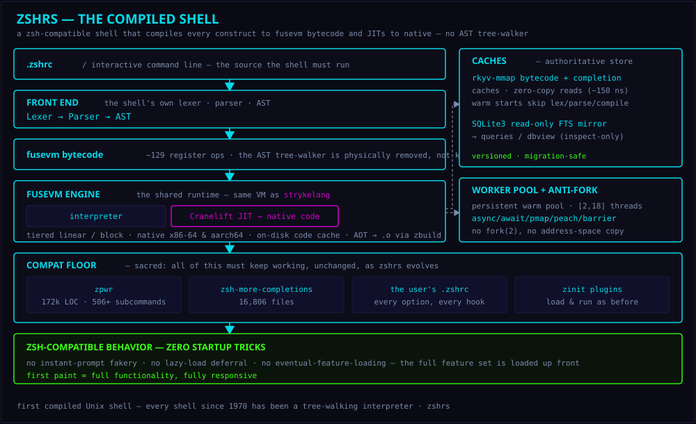
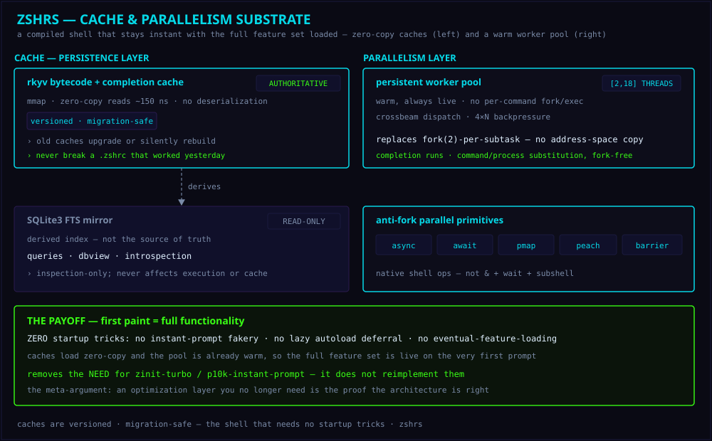
12
Compiled Unix shell: bytecode VM, JIT, no tree-walker
HIGH
First Unix shell whose entire execution model compiles every construct to register-based bytecode (fusevm, ~129 ops) and runs on a JIT'd VM, with the AST tree-walker physically removed rather than kept as a fallback. Basis: docs/DESIGN_GOALS.md §0x06 Phase F deletes execute_simple/pipeline/list/compound/command_bg (~1,275 LOC) from src/exec.rs; tests/tree_walker_absent.rs + tests/no_tree_walker_dispatch.rs (160 tests) pin absence and per-construct behavior; src/extensions/compile_zsh.rs (615 KB), src/fusevm_bridge.rs:951. Caveat: strong historical claim vs csh/ksh/bash/zsh/fish interpreters; zsh's .zwc caches parsed AST for re-interpretation, not bytecode-on-a-VM. fusevm is an external dependency.
13
Cranelift JIT + AOT-to-native-binary for shell code
HIGH
Hot shell bytecode JIT-compiles to native x86-64/aarch64 (tiered linear/block) with an on-disk cache; a script also AOT-compiles to a relocatable .o linked against the shell runtime staticlib into a standalone executable. Basis: Cargo.toml fusevm = { features = ["jit-disk-cache","aot"] }; src/extensions/aot.rs:379 build_native → fusevm::aot::compile_object → cc link libzsh.a; zbuild builtin (ext_builtins.rs:5377); trailer path bakes source into a binary copy (magic ZSHRSAOT), ~25 codec tests. Caveat: command execution still routes through the linked-in interpreter runtime (not a fully standalone-compiled program). AOT_DESIGN.md extras (perfect-hash completion tables, compile-time AOP, hardware-counter timing) are design-doc-only.
14
rkyv-mmap'd bytecode image cache — the only cross-invocation shell bytecode cache
HIGH
Compiled bytecode persists across invocations as zero-copy rkyv-mmap'd images (sharded per source-root with a two-level index.rkyv, ~150–200 ns), so warm starts skip lex/parse/compile entirely. Basis: src/extensions/script_cache.rs (~/.zshrs/scripts.rkyv, mmap + check_archived_root), autoload_cache.rs (16k+ bulk prewarm), daemon/shard.rs. Caveat: distinct from zsh .zwc (per-file static parsed AST); inner codec is still bincode inside the rkyv container.
15
Companion daemon as core shell substrate
HIGH
A singleton background daemon that shells connect to over a Unix socket owns all bytecode-cache mutation, supervises jobs, serves compiled bytecode via mmap (data plane), and brokers cross-shell pub/sub — spawned on demand by the first client, with N thin clients. Basis: zshrs-daemon crate (40+ modules; server.rs:35 UnixListener mode-600 + SO_PEERCRED; pidlock.rs flock singleton; shard.rs:426 mmap reads; pubsub.rs/state.rs:348 fan-out; tests/daemon_http.rs). Caveat: daemon-down falls through to source-interp (opportunistic accelerator). RFC notes fish's fishd was var-sync only, removed 2014.
16
Data-plane / control-plane split for shell config lookup
MED
Tab/prompt/alias lookups read daemon-built bytecode via direct mmap (~150–200 ns, no IPC per call) while only configuration mutation crosses a JSON-over-Unix-socket control plane. Basis: src/extensions/canonical_apply.rs mmaps ~/.zshrs/images/*-recorder.rkyv into the executor's HashMaps at cold-start (the doc rejects the earlier per-startup-IPC version as 5–10 ms too slow); DESIGN_GOALS.md §0x04a hard-rule #2. Caveat: an architectural design point; overlaps the daemon claim.
17
Daemon as a universal user-space service consumable from any shell
MED
The daemon doubles as a general service — persistent KV, job submission, cross-process locks, fsnotify triggers, pub/sub, build-artifact cache, cron-equivalent scheduling — usable from bash/fish via an HTTP client with scoped auth tokens, collapsing cron/anacron/launchd/flock/sccache into one daemon. Basis: docs/DAEMON_AS_SERVICE.md; daemon/http.rs, bins/zd.rs HTTP client, daemon/auth.rs (scoped vs flat tokens, scope_denied 403), daemon/schedule.rs (6-field cron, sqlite tick loop). Caveat: some endpoints are v1/partial; the decoupling thesis is partly forward-looking.
18
Native cross-shell pub/sub + dispatch primitives
MED
Cross-shell publish/subscribe as native daemon primitives — scope/topic subscriptions (shell:<id>, tag:<name>, user:<name>, *) over command/chpwd/prompt/exit/signal topics, brokered without filesystem-IPC polling. Basis: daemon/pubsub.rs; builtins zsend/zsubscribe; RFC contrasts zconvey (filesystem-IPC + per-prompt polling). Caveat: the cross-host federation leg is largely unbuilt (see #34).
19
Session-persistent, daemon-supervised jobs (zjob) surviving shell exit
MED
Native jobs supervised by the daemon survive shell exit at process granularity (not terminal granularity), with captured stdout/stderr and queryable status — replacing nohup/disown/setsid/pueue/screen-as-runner. Basis: daemon/jobs.rs (38 KB), daemon/zjob_builtin.rs (output to ~/.zshrs/jobs/{id}.{out,err}). Caveat: author framing as "tmux at process granularity"; restart-policy maturity unverified.
20
zsync — push/pull/diff a live shell's mutable state to a shared canonical store
MED
Snapshots a running shell's entire mutable overlay (aliases, global/suffix aliases, options, params/arrays/assoc, env, path/fpath/manpath) into a daemon canonical store so other shells pull it — cross-shell state sync as a builtin. Basis: src/extensions/overlay_snapshot.rs enumerate_all_overlays + daemon/zsync.rs (push/pull/diff, canonical_changed event) + daemon/canonical.rs. Caveat: v1 stores canonical as JSON in catalog.db.
21
Plugin-Framework-Agnostic State-Modification Recorder (PFA-SMR) + replay protocol
HIGH
A feature-gated recorder captures, via runtime AOP over the state-mutating dispatcher, every alias/function/var/bind/complete/source mutation produced by any plugin framework (zinit/oh-my-zsh/prezto/antidote/antigen/zplug/zpwr) at per-definition granularity, as typed ordered events over a versioned serde wire protocol the daemon ingests and replays into live state. Basis: src/recorder/mod.rs (RecordEvent with order_idx/ts_ns/22 DefKinds); daemon ingest daemon/ops.rs:1396; replay in canonical_apply.rs; tests recorder_harness.rs (24 scripts), recorder_zsh_functions.rs (~1200 functions). Caveat: a state-mutation recorder, not PTY/keystroke capture; replay is partial (inline function bodies, zmodload, sourced files not replayed); must re-run on new plugin installs.
22
Open wire protocol for third-party shell recorders
LOW
A shell-agnostic recorder ingest protocol (recorder_ingest/definitions_emit/SSE /stream/definitions) lets non-zshrs shells (bash, fish) emit per-definition state records with file:line provenance into the same daemon store. Basis: docs/RECORDER_PROTOCOL.md (bundle/event encodings, minimal fish reference recorder, conformance checklist); daemon/definitions.rs. Caveat: protocol + reference snippets documented; third-party adoption hypothetical; overlaps #21.
23
Runtime aspect-oriented intercept advice on any shell command
HIGH
First-class AOP — intercept before|after|around <pattern> { … } weaves advice around any command/function, with intercept_proceed to call the original and $INTERCEPT_MS/$INTERCEPT_ARGS exposed to advice. Basis: src/extensions/intercepts.rs (AdviceKind::{Before,After,Around}, run_intercepts glob matching, proceed gating); README:217. Caveat: runtime advice on the dispatch path, not the compile-time AOP weaving described (but unimplemented) in AOT_DESIGN.md; the only zsh analog is addwrapper().
24
Plugin-manager state surfaced as IDE External Library roots
MED
The IDE integration reads plugin-manager state and exposes each plugin as a navigable, indexable, find-usages-able IDE library root, grouped by inferred manager. Basis: zshrs --dump-plugins (reads plugin_cache SQLite, plugin_cache.rs 68 KB); JetBrains ZshrsLibraryRootProvider.kt/ZshrsPluginRegistry.kt implementing AdditionalLibraryRootsProvider. Caveat: scoped to the bundled JetBrains plugin.
25
Native LSP language server built into the shell binary
HIGH
An LSP server ships as a native, dependency-free subsystem of the shell binary itself (zshrs --lsp, hand-rolled stdio JSON-RPC) rather than a separate Node process. Basis: src/extensions/lsp.rs (561 KB) + lsp_symbols.rs (45 KB); JetBrains driver in editors/intellij/.../lsp/; RFC contrasts bash-language-server (Node, external). Caveat: "first" contrasts against mainstream third-party LSPs, not a formal proof.
26
Native DAP debug adapter built into the shell binary
HIGH
A full Debug Adapter Protocol server (zshrs --dap HOST:PORT, TCP) for line-level shell-script debugging — breakpoints, stack frames, evaluation — as a first-class subsystem. Basis: src/extensions/dap.rs (33 KB); JetBrains debugger client (ZshrsDebugProcess, ZshrsBreakpointHandler, ZshrsStackFrame, ZshrsEvaluator). Caveat: line tracking depends on debug-only VM instrumentation (fusevm Op::DebugLine); variable/scope inspection maturity unverified.
27
Compiled completion functions as rkyv-mmap'd fusevm bytecode
MED
zsh completion functions pre-compile to fusevm bytecode stored in mmap'd rkyv shards (consumed zero-copy on Tab), replacing zsh's re-interpret-shell-script-per-Tab model where ~11,656 lines of library shell run per keypress. Basis: src/compsys/README.md (rkyv-mmap hot path, parallel rayon compinit); autoload_cache.rs (16k+ autoload bytecodes bulk-committed). Caveat: overlaps #14 but completion-specific.
28
In-editor live compsys completion (zsh completion driven from an LSP)
MED
zsh's compsys is reimplemented in Rust (~128 files / ~22k LOC mirroring zsh Completion/) and driven outside an interactive shell so an LSP surfaces the same matches a Tab press would, with no subshell spawn. Basis: src/compsys/ported/; src/compsys/in_editor.rs:256 complete_at; LSP wiring lsp.rs:1697; tests/compsys_backend_proof.rs. Caveat: Phase 0.5 / unproven end-to-end — no per-command completer (_git/_kubectl) ported yet, in-editor smoke test yields zero matches (no compinit bootstrap); framework real, content WIP.
29
Read-only SQLite mirrors of live shell state for SQL/dbview introspection
MED
The shell mirrors its internal tables (aliases, _comps/_services/_patcomps, zstyles, functions, executables, autoloads, hooks, plugins, entry stats) into queryable SQLite views so the operator can run SQL / dbview against shell state — without those rows affecting execution or cache semantics. Basis: compsys/README.md §0x04; dbview builtin in ext_builtins.rs; daemon/catalog.db schema; canonical.rs hydrate_sqlite_view. Caveat: explicitly inspection-only.
30
zcache export → eval canonical-state reset round-trip
MED
Emits any subsystem's full canonical state as eval-compatible shell source with a wipe prefix, so eval $(zcache export <target>) resets aliases/path/functions/_comps/ zstyle/bindkey to canonical in the live process — no parser, no importer, preserving $$/fds/cwd/history/jobs. Basis: docs/DAEMON.md "Universal cache dump/export/view" (zcache export aliases → unalias -m '*' + re-alias; --additive); daemon/ops.rs/export.rs (82 KB). Caveat: round-trip fidelity depends on canonical capture completeness.
31
Snapshot / diff / bisect of full shell state
MED
Saves portable rkyv snapshots of canonical state, structurally diffs two snapshots per-record, and bisects to the first diverging record — git-like state archaeology for a shell environment. Basis: daemon/snapshot.rs (snapshot_save/load/diff/bisect, ~/.zshrs/snapshots/<tag>.rkyv); DAEMON_AS_SERVICE.md. Caveat: v1 defers publish/sign/verify and registry transport.
32
Anti-fork in-process coreutils + fork-free command substitution
LOW
Executes 24 coreutils (cat/head/tail/wc/sort/find/uniq/cut/tr/seq/date/…) plus 4 xattr ops as in-process builtins and captures $(builtin) via dup2 with zero fork. Basis: src/extensions/ext_builtins.rs (353 KB), RFC "Anti-Fork Architecture" + Appendix A parity matrix; xattr syscalls src/ported/modules/attr.rs; fds.rs. Caveat: in-process coreutils exist (busybox/nushell); the novel leg is doing it inside a zsh-compatible compiled shell with fork-free cmdsubst — "fastest, not first" by the project's own rule for the coreutils alone.
33
No-fork parallel execution: worker pool + VM-executed parallel primitives
MED
Shell-native parallel primitives (async/await/pmap/pgrep/peach/barrier) compile to bytecode and run on a persistent warm thread pool, replacing the fork(2)-per-subtask model (completion runs, command/process substitution) with bounded crossbeam dispatch — no address-space duplication. Basis: src/extensions/worker.rs (crossbeam pool, available_parallelism() clamped [2,18], 4×N backpressure, catch_unwind per task; doc contrasts zsh's zfork()/forklevel). Caveat: async/await as shell keywords overlap other languages; novelty is the zsh-superset surface + no-fork execution.
34
Cross-host daemon federation as a shell primitive
LOW
Federating peer shell-daemons across hosts so canonical state / pub-sub / dispatch span machines as first-class shell primitives. Basis: locked design goal in DESIGN_GOALS.md §0x04a + federate scope hooks in daemon/auth.rs:166, builtins.rs:1961, canonical.rs. Caveat: largely aspirational — no dedicated federation.rs, only scattered scope hooks; recorded ahead of implementation.
35
zask — daemon-queued cross-shell UI inbox (pull-mode)
LOW
Any process enqueues interactive UI requests (picker/input/dialog/menu/progress) to a daemon that never auto-renders; the target shell pulls them on demand (Ctrl-X q / zask take) without disturbing an active prompt. Basis: daemon/zask.rs + zask_builtin.rs (queue + ask:pending status-line event + inbox model). Caveat: v1 implements the queue; actual TUI rendering is deferred to ZLE integration — partly stubbed.
36
Shell-level xUnit test framework with cross-language-ported assertions
LOW
A built-in xUnit-style test framework (zassert_eq/ne/ok/err/gt/lt/match/contains/near/ dies, ztest_run, ztest_skip) runs in-process, ported from the author's strykelang test runner; z*-prefixed to avoid clashing with POSIX test/[. Basis: src/extensions/ztest.rs (40 KB); runner CLI in bins/zshrs.rs. Caveat: bats/shunit2 exist as external scripts; novelty is in-binary, compiled, with zassert_dies semantics.
37
zsh-aware source formatter surfaced via LSP formatting
LOW
A zsh-source formatter built into the shell, surfaced as zshrs --fmt and LSP textDocument/formatting, operating on the shell's own parsed AST. Basis: src/extensions/fmt.rs (47 KB) + func_body_fmt.rs. Caveat: shfmt exists for POSIX/bash externally; novelty is a native zsh-aware formatter wired to the shell's own parser + LSP.
38
No-GC shell runtime guarantee
LOW
A shell runtime that never traces, compacts, or stops the world — deterministic Rust ownership + Arc refcount + scope-bounded arenas, with a dependency policy banning GC'd crates — pitched as viable in latency-critical (audio/network/robotics) pipelines. Basis: docs/AOT_DESIGN.md §0x10 (memory-model table vs bash/zsh/fish/nu/Raku; dependency-rejection rules); Cargo.toml panic = "abort". Caveat: the property is inherited from Rust (other Rust shells like nushell are equally non-tracing) — the differentiator is the explicit guarantee, not a unique mechanism.
39
Reads and byte-compares zsh's own .zwc wordcode as a parser-parity oracle
MED
Decodes zsh's native compiled .zwc wordcode and emits a canonical AST S-expression so zshrs's parser output can be byte-compared against zsh's own bin_zcompile() output — a verifiable parser-parity oracle. Basis: src/extensions/zwc_decode.rs (43 KB) + zwc.rs (60 KB) + ast_sexp.rs → tests/parity_harness.rs. Caveat: verification infrastructure, not a user-facing capability.
40
Real-PTY, per-file-persistent zsh test harness (ZTST)
LOW
A harness driving zshrs through a real PTY with a persistent per-file shell process and a block-boundary protocol, to prove behavioral parity against zsh's own ZTST suite (incl. ZLE/completion blocks). Basis: docs/ZTST_PTY_HARNESS.md; src/ported/modules/zpty.rs. Caveat: testing infrastructure with a forward-looking phase plan.
III. strykelang — the language
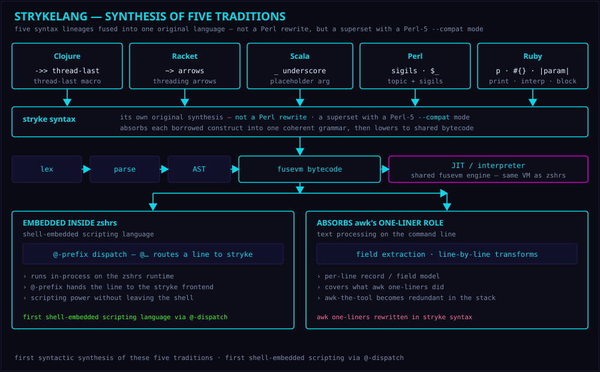
41
Tri-tier Cranelift JIT + native-AOT for a Perl-5-compatible language
HIGH
A dynamic Perl-5-shaped language whose numeric hot paths lower to the shared fusevm three-tier Cranelift JIT, with a separate path AOT-compiling whole programs to relocatable native objects linked against libstryke.a. Basis: jit.rs (5,465 L, linear+block tiers), fusevm_bridge.rs (5,063 L), fusevm_native.rs (2,850 L, "Phase 1 of retiring strykelang's own VM"), aot_native.rs (stryke build --native). Caveat: tiers live in the sibling fusevm crate; stryke today offloads only eligible numeric segments (strings/arrays/hashes/closures stay on stryke's VM); whole-program native is WIP.
42
Self-contained AOT trailer-format executables with versioned magic
HIGH
stryke build appends a zstd-compressed script payload as a versioned, OS-loader-invisible trailer (STRYKEAOT magic) to a copy of the interpreter binary, with idempotent rebuild and ~50 µs magic-suffix detection. Basis: aot.rs (530 L) layout [zstd payload][u64 lens][u32 ver][u32 rsv][8B magic]. Caveat: this track re-parses + re-runs on the interpreter at startup; the truly-native artifact is aot_native.rs.
43
rkyv zero-copy mmap'd bytecode cache for warm-start reruns
HIGH
Second-run scripts skip lex/parse/compile via a single rkyv-archived shard mmap'd and read through zero-copy ArchivedHashMap, ~11× faster warm starts, shared across concurrent invocations via the OS page cache. Basis: script_cache.rs (779 L, ~/.stryke/scripts.rkyv); docs/CACHE_RKYV_MIGRATION.md ("SHIPPED", p50 241 µs→22 µs). Caveat: not fully zero-copy (inner Program/Chunk still bincode); mtime+hash invalidation.
44
rkyv zero-copy KV store as a core builtin
HIGH
A first-class persistent CRUD key/value store (kv_get/kv_set/…) backed by a zero-copy rkyv archive — kv_get is mmap + validate + cast, no per-read deserialize. Basis: kvstore.rs (722 L), framed vs Python shelve/Ruby PStore/Perl DBM_File (all pay parse+alloc per read). Caveat: single-file archive + in-memory HashMap mirror + atomic rewrite on commit; not a concurrent multi-writer DB.
45
ai as a no-import language primitive with tool fn / MCP DSL
HIGH
LLM agents, tool-calling, MCP client/server, RAG memory, and cost-aware batching ship as a built-in ai primitive (call, ~> thread-macro, |> pipe; ~80 ai_* builtins; hard USD ceiling via max_cost_run_usd, ai_cost, tokens_of, ai_mock deterministic test interception) rather than an imported SDK. Basis: ai.rs (6,638 L: agent loop, multi-provider dispatch, SSE streaming, prompt caching, vision/PDF, batch API, sqlite RAG, ai_filter/map/sort/classify/match/dedupe); ai_sugar.rs desugars tool fn/mcp_server (build-time JSON-schema-from-signature); mcp.rs (1,249 L, JSON-RPC stdio + streamable-HTTP). Caveat: in-process/offline model deferred (local = shell-out to Ollama/LM Studio); server-side mcp_server { } DSL pending (only client ships); Anthropic-first.
46
Inline Rust FFI blocks compiled to cdylib at runtime
HIGH
rust { … } blocks embedded in stryke source compile to a cdylib via rustc --crate-type=cdylib -O on first run, content-hash-cached, dlopened, and registered as callable subs. Basis: rust_ffi.rs (812 L) + rust_sugar.rs; cache at ~/.stryke/ffi/<sha256>.(dylib|so), ~10 ms warm dlopen. Caveat: requires rustc on the machine; cdylib runs with caller privileges (same trust model as do FILE).
47
Value provenance / lineage tracking as a builtin
MED
mark($x) tags a value's heap Arc so subsequent operations accumulate a lineage record retrievable via provenance($x) — automatic dataflow lineage exposed as a user verb, zero-cost when unused. Basis: provenance.rs (469 L), framed "no existing scripting language ships this". Caveat: lineage accrues only for marked values; op coverage breadth unverified.
48
Polymorphic steganography builtins (hide/reveal)
MED
hide(carrier, secret[, key]) auto-detects carrier type — PNG LSB embed in RGB channels or zero-width-char text encoding (U+200B/U+200C) — with a self-describing wire format (CRC framing + key-XOR) for reveal. Basis: stego.rs (412 L). Caveat: two carrier kinds only; LSB stego is not cryptographically robust.
49
NAT-traversal builtins: STUN hole-punching + TURN relay fallback
HIGH
Language-level peer connectivity: stun/punch implement an RFC-8489 STUN client + UDP hole-punching state machine with no third-party crate, plus an RFC-8656 TURN relay-fallback client for symmetric NATs. Basis: nat_punch.rs (835 L, hand-rolled XOR-MAPPED-ADDRESS), turn_client.rs (965 L). Caveat: IPv4 only; protocol coverage is the common-case subset.
50
SHM multi-target IPC teleport/arrive + turnbuckle liveness
HIGH
teleport($val, @pids) broadcasts a serialized value to N receiver processes via a single POSIX shared-memory allocation + N read-only mmaps (beating N socket copies), with arrive() to receive and turnbuckle($peer_pid) for 1:1 heartbeat liveness over UDS datagrams. Basis: teleport.rs (420 L), turnbuckle.rs (271 L). Caveat: POSIX-only; value still JSON-serialized once on the sender; closures/blessed objects don't round-trip.
51
cluster() SSH worker pool + pmap_on distributed work-stealing
HIGH
A built-in cluster() opens persistent SSH connections, spawns stryke --remote-worker processes, and exposes the pool as a language value over which pmap_on $cluster { … } distributes work with work-stealing. Basis: cluster.rs (601 L), remote_wire.rs (1,077 L, framed bincode v3 persistent-session protocol). Caveat: requires the stryke binary on remotes; closures don't round-trip the wire.
52
Bare-metal stress builtins + fleet agent/controller REPL
HIGH
The single binary doubles as stryke agent and stryke controller (interactive fleet REPL: status/fire/terminate, ~29-verb scatter/gather over TCP+bincode), plus stress builtins (stress_cpu/stress_mem/stress_io/heat) pinning all cores to ~100% TDP. Basis: agent.rs (1,017 L), controller.rs (1,448 L), stress.rs (1,835 L); tests/suite/scriptable_controller_pin.rs. Caveat: mTLS/Prometheus/k8s are roadmap; TDP figures are M3-Max-specific.
53
Probabilistic data structures (sketches) as stdlib builtins
MED
Bloom filter, HyperLogLog, count-min sketch, etc. ship as first-class %b builtins next to set/deque/heap, Arc<Mutex>-wrapped for safe use under parallel iteration. Basis: sketches.rs (3,479 L), framed world-first-as-stdlib vs pyprobables/bloom-filters npm. Caveat: the algorithms are well-known; the claim is "as stdlib primitives".
54
Tri-directional source translation: Perl ⇄ stryke and zsh → stryke
HIGH
Built-in subcommands convert Perl→stryke (convert), stryke→Perl (deconvert), and zsh→stryke (classifying builtins native vs externals to system()), with an AST deparser round-tripping code refs to source. Basis: convert.rs (1,990 L), deconvert.rs, zsh_convert.rs (1,979 L), deparse.rs (2,144 L). Caveat: conversion fidelity unverified; zsh externals fall back to system() strings.
55
Empirically-validated Perl 5 --compat on a JIT'd runtime
MED
A --compat mode pinning behavior to upstream Perl 5, specified by a ~20,000-test parity corpus, on a JIT'd runtime — claimed 2nd-fastest single-threaded dynamic language (behind LuaJIT) and fastest multithreaded. Basis: docs/patent.md Patent D #20; examples/rosetta/README.md (beats perl5/Python/Ruby/Julia/Raku, beats LuaJIT on 3 of 8); parity/; English.pm aliases english.rs; C3 MRO mro.rs. Caveat: the 20,000-test count and benchmark numbers are claims, not independently re-verified here.
56
Encyclopedic no-import stdlib (~10k verbs) incl. git/jq absorbed as builtins
HIGH
Thousands of builtins without import — version control (git), structured-data query (jq), terminal viz, crypto/stats/linalg — inverting "core minimal, libraries optional". Basis: 82 math_wolfram_*.rs (astronomy, GR, quantum gates, BLAS/LAPACK, pandas/scipy/sklearn analogues) + ~30 builtins_*.rs; builtins_github.rs; ~7,300–10,900 dispatch arms (documented ~10,449 incl. aliases). Caveat: exact count fuzzy (alias vs primary); absorbed jq/git are native subset reimplementations, not full upstream parity.
57
god heap introspection + nine compile-time reflection hashes
MED
god EXPR dumps heap pointer, Arc strong/weak counts, payload size, and generator/pipeline/closure-capture internals with cycle detection; complemented by nine compile-time-populated globally-named introspection hashes (%b/%all/%k/%a/%pc/…) giving O(1) bidirectional name↔callable indexing under the invariant %all = %a + %b + %k. Basis: god.rs (336 L); reflection table seeded builtins.rs:609; patent.md D #17. Caveat: the disjoint-union invariant wasn't independently re-verified.
58
Polymorphic literal-typed range operator inferring 11+ element domains
HIGH
A single range operator infers element type from endpoint literal form — integer, char, hex (preserving width/case), IPv4, IPv6, ISO date (step=days), year-month (step=months), HH:MM time, weekday names, month names, Roman numerals — with no trait/protocol boilerplate. Basis: value.rs (~4533–4587) ordered dispatch; Op::Range/RangeStep vm.rs:6343; examples/ipv4_cidr.stk, examples/roman_numerals_no_interop.stk. Caveat: detection is heuristic/order-sensitive; the int/char part is Perl-..-like — the date/IP/Roman/time unification is the novel part.
59
Pipeline-operator family extended with parallel and distributed arrows
HIGH
Five+ first-class pipeline operators (|>, ->/->>, ~>/~>>) extended with arrows that fan a pipeline across cores (ThreadArrowPar) and across a remote cluster (ThreadArrowDist), composable with bare-fn, arrow-block, and positional-placeholder stage forms. Basis: token.rs:179-216; parser wiring parser.rs:10099 (parse_thread_macro_dist/_par). Caveat: the "universal-access" framing is an abstraction over the operator set, not a verified invariant.
60
First-party LSP + DAP with a multi-editor plugin suite
HIGH
An embedded language server and a DAP server ship in-tree, plus first-party editor integrations spanning a full IntelliJ plugin (lexer/parser/DAP/refactor/navigate), Vim, Lua/Neovim, Helix, and VS Code/coc. Basis: lsp.rs + lsp_extras.rs/lsp_symbols.rs; dap.rs (1,997 L, st --dap, reuses debugger.rs); editors/intellij/ Kotlin plugin, stryke.vim, stryke.lua, helix-languages.toml, coc-settings.json. Caveat: per-editor completeness varies.
61
Reference docs generated from the LSP doc corpus (single source of truth)
MED
docs/reference.html and the interactive stryke docs browser are generated from one in-code corpus (lsp::DOC_CATEGORIES + doc_text_for), so hover-docs, the terminal pager, and the static HTML site never drift. Basis: bins/gen_docs.rs (cargo run --bin gen-docs), doc_render.rs, docs.rs. Caveat: each piece (LSP hover, doc-gen) has prior art; the single-source unification is the novel bit.
62
Rails-shaped web framework runtime as language builtins
MED
web_* builtins (serve, ORM web_db_*, chainable models, migrator) provide a Rails-style DSL whose generator emits a full-stack app, intended to AOT-compile to a single static binary on thread-per-core io_uring. Basis: web.rs (3,952 L) + web_orm.rs (1,880 L, SQLite-backed ORM/migrator); stryke_web/ generator; docs/WEB_FRAMEWORK.md. Caveat: HTTP/2, glommio/io_uring, SIMD parser deferred to "Phase 2+"; ORM is SQLite-only.
63
Package manager that AOT-compiles the whole dep graph to native
MED
A Cargo/uv/Nix/Bundler/npm-synthesis package manager (s CLI: init/add/build/ publish) with TOML manifest, hash-pinned lockfile, content-addressable store, and per-package-scoped features, whose s build --release AOT-compiles user code + every dep + stdlib through Cranelift to one static binary. Basis: pkg/ (manifest.rs/lockfile.rs/resolver.rs/store.rs/commands.rs); docs/PACKAGE_REGISTRY.md; bins/s.rs. Caveat: the "compile every transitive dep to native" feature depends on the still-WIP whole-program native path; registry maturity unverified.
IV. Audio & the modular DAW — the zpwr stack
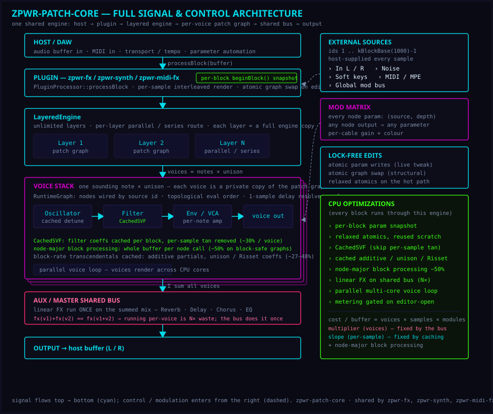
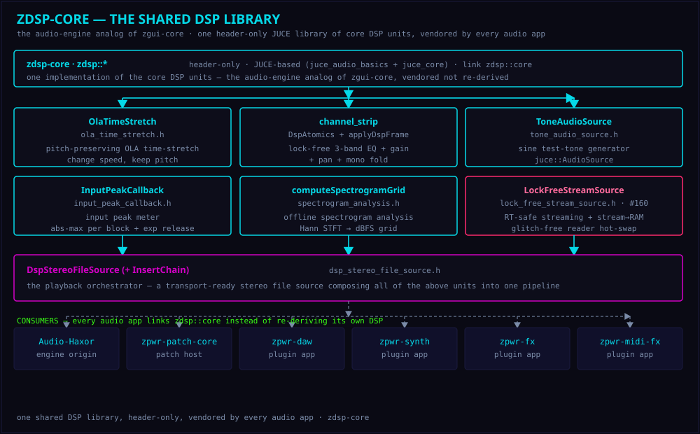
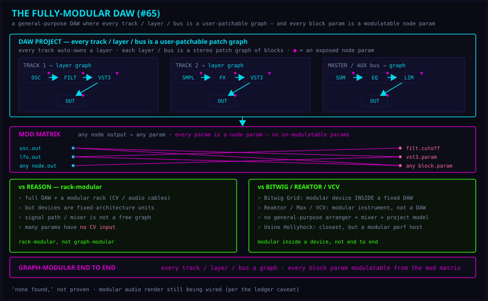
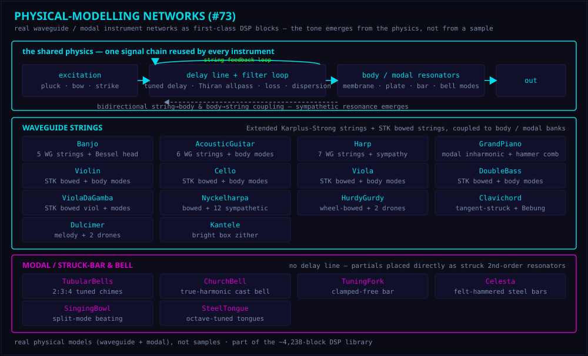
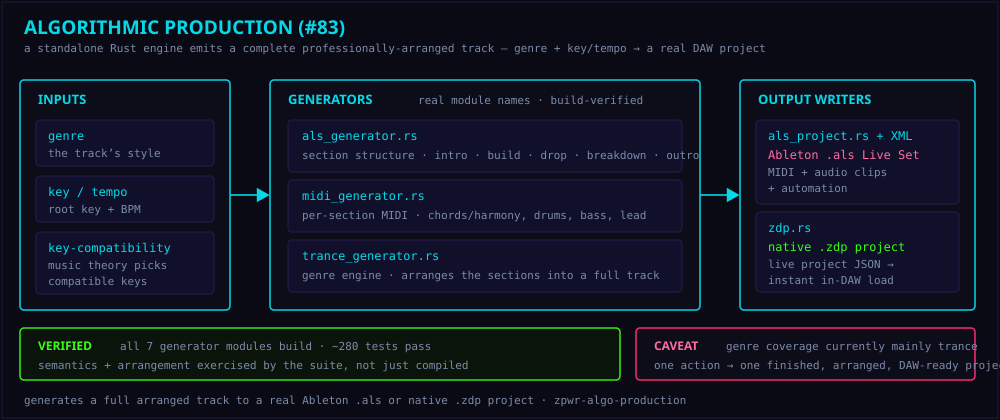
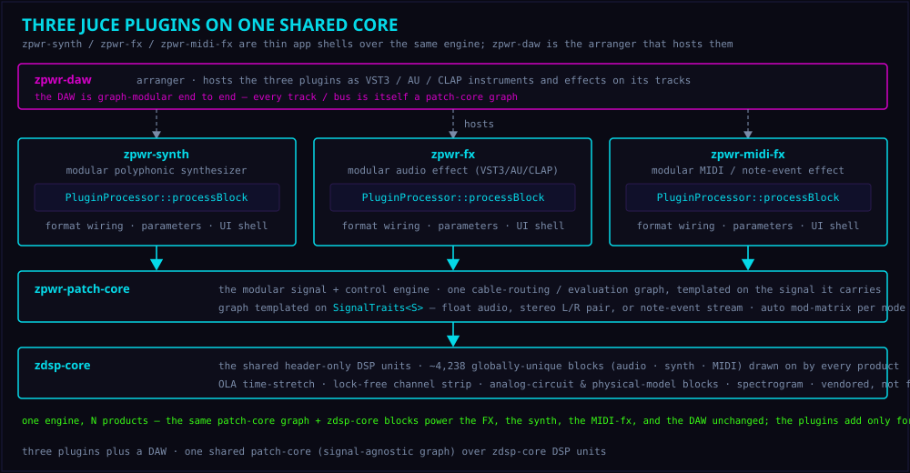
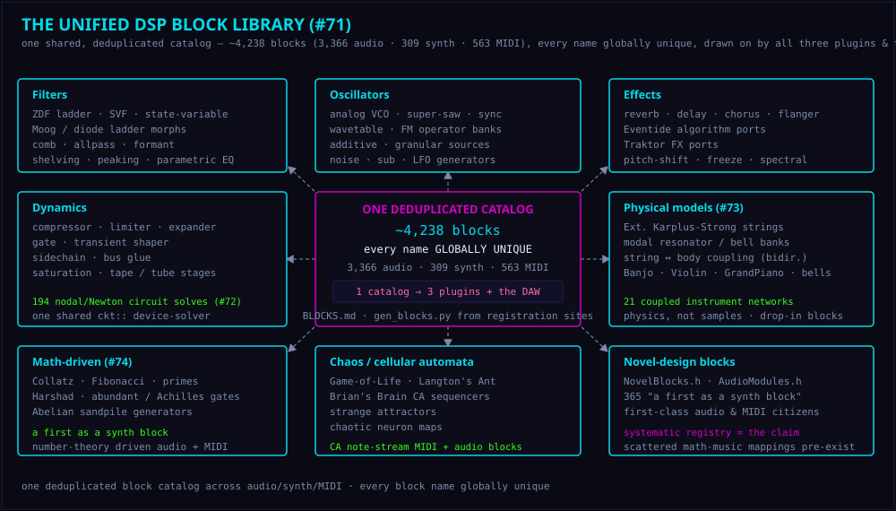
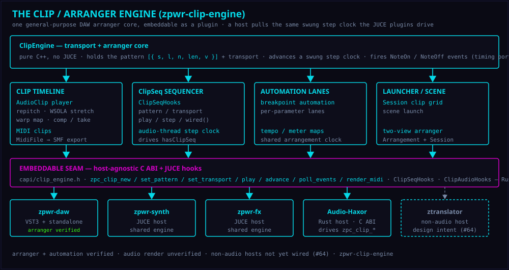
64
★ General-purpose DAW arranger that runs as a plugin AND embeds in any GUI app
MED
A complete two-view arranger (Arrangement + Session, clips, breakpoint automation, tempo/meter maps) shipping standalone, as a VST3 inside another DAW, and embedded in arbitrary hosts — designed to drive even non-audio ones off the same clip/automation timeline. Basis: zpwr-daw app + zpwr-clip-engine; editor/arranger/automation verified. Caveat: "None found", not proven (see analysis). The audio render path is written but unverified (pending JUCE build). Honesty correction: the non-audio embeds (traderview → trades, ztranslator → translations) are aspirational — a grep of those app repos finds no clip-engine/timeline mount; traderview uses a stryke-JIT backtester + uPlot, ztranslator an integer-rules event-translation VM. The cross-domain-timeline claim is design intent, not yet wired in those apps.
65
★ Fully modular DAW — every track/layer/bus is one user-patchable graph
MED
Not a fixed channel-strip mixer with a modular device bolted on, but a DAW whose entire signal path is a user-patchable graph — every track auto-owns a layer, each layer is a stereo patch graph hosting oscillators/FX/VST3-AU plugins, the synth panel and mod matrix are generated from that same patch, and master/aux/global-mod buses are themselves patch graphs. Basis: zpc::StereoGraph (PatchEngineT<StereoSample>) + native stereo Plugin host, shared across all four products; per-track stereo graphs wired into the daw. Caveat: "None found", not proven (see analysis). Modular audio render (per-track graphs → master mix) is in progress / partially unverified — graph/wrapper/stereo-block are compile-verified; full per-track audio + cue bus still being wired.
66
★ DAW with an embedded interactive shell terminal
MED
A real interactive shell running inside the DAW (the MenkeTechnologies stack — zshrs/stryke), not a constrained scripting console, for driving the shell/CLI from within the project. Basis: part of the zshrs/stryke ↔ daw integration. Caveat: "None found", not proven; in progress, recorded ahead of completion. Scripting consoles exist (ReaScript, Max), but a full embedded interactive shell terminal in a DAW has no clean prior art found.
67
★ DAW with an embedded scripting language for all lifecycle hooks + GUI automation
MED
stryke embedded as a first-class scripting layer wired to every DAW lifecycle hook (load/save/transport/clip/track/render) and able to drive the GUI itself (interface automation, not just audio params). Basis: part of the stryke ↔ daw integration. Caveat: "None found", not proven; impl WIP. Reaper ReaScript / Bitwig controller scripts expose some actions, but a language bound to all lifecycle hooks and GUI automation has no clean prior art found.
68
★ DAW designed for one-click algorithmic music production
MED
Built from the ground up so the modular graph + embedded scripting + generative engine produce a finished, professionally-mixed track from a single action — generation as the primary workflow, not a loop-pack assist bolted onto a linear DAW. Basis: generative engine (zpwr-algo-production, 282 tests) linked over a C ABI; the PRODUCE tab generates a full arrangement in one click with chooseable output (.zdp or Ableton .als). Caveat: "None found", not proven. Auto-mix/master polish is maturing.
69
Signal-agnostic patch-graph core templated on the signal type
HIGH
One modular cable-routing/evaluation engine that "knows nothing about audio or MIDI", templated on the signal it carries (float audio, an L/R stereo pair, or a note-event stream), so one core powers an FX, a synth, a MIDI effect, and a DAW unchanged. Basis: zpwr-patch-core/include/zpc/PatchCore.h (graph templated on SignalTraits<S>), src/PatchCore.cpp; tests PatchCoreTest.cpp. Caveat: signal-agnostic graphs exist in research patchers; the reusable cross-domain C++ core is the novel artifact.
70
~3.5k mono FX blocks auto-promoted to true stereo via dual-mono wrapping
HIGH
Any of the ~3.4k mono DSP blocks runs in real stereo "for free" by a generic wrapper that instantiates the block once per channel with independent L/R state, over a stereo graph where a single cable carries an L/R pair — no hand-written stereo block set. Basis: StereoGraph.h (wrapMonoAsStereo, registerStereoModules), StereoPluginBlock.h; wired in zpwr-daw .../PluginProcessor.cpp. Caveat: the daw stereo path is compile/link-verified and "sums silence until a track's stereo graph hosts an instrument/FX".
71
Unified ~4,238-block globally-unique DSP library across audio/synth/MIDI
HIGH
One shared, deduplicated block catalog (3,366 audio, 309 synth, 563 MIDI), every name globally unique, drawn on by all three plugins and the DAW. Basis: zpwr-patch-core/BLOCKS.md (auto-generated by scripts/gen_blocks.py from registration sites); category counts grep-confirmed. Caveat: raw count includes many close variants; "largest" not independently benchmarked.
72
194 component-level analog-circuit-modeled blocks on a shared device-solver
HIGH
194 blocks are true per-sample nodal/Newton circuit solves — ZDF ladder/SVF, Shockley-diode & Ebers-Moll-BJT clippers, Koren 12AX7 triode + EL34 push-pull power stage, Jiles-Atherton tape hysteresis, Lambert-W Lockhart wavefolder, four-diode ring mod — not voiced approximations, sharing one ckt:: framework. Basis: Circuit.h, TubeAmp.h, Analog.h; per-block audit ANALOG_CIRCUIT_MODELING.md ("0 abstract / 0 partial"). Caveat: breadth is the novelty; individual device models are established techniques.
73
21 physical-model instrument-network blocks with string↔body coupling
MED
21 blocks are full instrument networks — Extended Karplus-Strong waveguide strings + modal resonator banks + bidirectional string↔body coupling — so sympathetic resonance and attack transients emerge from the physics. Basis: PhysicalModel.h (12 tech="physical" tags), Physical.h; BLOCKS.md PHY badge. Caveat: physical modeling is a known field; novelty is offering coupled string/body networks as drop-in patch blocks.
74
Generative-math block family: number-theory / chaos / cellular-automaton generators
MED
A large family of sound/sequence generators driven by pure mathematics — Abelian sandpile, abundant/Achilles/Harshad number gates, Collatz/Fibonacci/prime sequences, Game-of-Life / Langton's-Ant / Brian's-Brain CA, strange attractors and chaotic neuron maps — as first-class audio and MIDI blocks. Basis: NovelBlocks.h, AudioModules.h; 365 blocks self-described "a first as a synth block". Caveat: scattered math-music mappings exist in research/Reaktor patches; the systematic registry library is the claim.
75
Mod matrix derived automatically from the patch graph
MED
The modulation matrix is not a separate fixed grid — every node carries a float scalar projection of its output and every node parameter exposes a (source, depth) mod slot, so any block is automatically a modulation source for any parameter. Basis: PatchCore.h / src/PatchCore.cpp (mod-matrix eval, per-node scalar projection); README [0x00]. Caveat: modular synths inherently allow mod-from-anywhere; the explicit per-node-scalar-projection formalization is the distinctive engineering.
76
True-stereo mirror maintained from a single editable mono chain (Stereo Lock)
MED
A "Stereo" toggle mirrors an entire mono patch (every block, cable, mod) into an independent right-channel clone chain (node j′ = j + N, reading In R where the original reads In L), auto-re-mirrored on every structural edit, with an optional "Lock" linking L/R knobs. Basis: zpwr-patch-core README [0x03] (stereoize/stripStereo/stereoSync/ NodeDef::clone/reconcilePresetModes). Caveat: audio-host only; an editor/graph transform, not a new DSP capability.
77
Reusable sub-patch "user modules" with a serverless git-backed registry
MED
Any selection of blocks (with internal cables, mods, tempo-sync) saves as a self-contained reindexable .zmod sub-graph that splices into any patch and degrades gracefully across hosts, shared through a static git-backed JSON registry with no server (PR-based publishing). Basis: PatchCore.h (extractSubPatch/spliceInsert/ModulePorts); README [0x05] (.zmod, registryUrl, listModules/saveModule/importRegistryModule). Caveat: Phase 1 splices modules into real blocks (no nested-block encapsulated playback yet).
78
Single FX plugin exposing the entire patch-graph palette (H3000-Factory generalized)
HIGH
A shipping VST3/AU/CLAP effect with no fixed node count where the user wires any number of the 2,782 audio blocks into arbitrary feedback/cross-modulation patches — the "build-your-own-algorithm" idea generalized to thousands of primitives. Basis: zpwr-fx/README.md [0x00]/[0x02] (dynamic patch graph, summing buses, one-sample-delay feedback); src/ consumes libs/zpwr-patch-core. Caveat: practical patch size is CPU-bound.
79
Fully modular polyphonic synth where the patch is the voice
MED
A VCV-Rack/Reaktor-Blocks-lineage synth with no fixed signal path: the user-built patch graph is instantiated as each voice across a polyphonic pool, with Scala microtuning applied as a fractional-note external so every oscillator inherits the tuning. Basis: zpwr-synth/README.md [0x00]/[0x01] (zsynth::PolyEngine → zpc::RuntimeGraph per voice); dsp/SynthModules.cpp; Scala.h. Caveat: modular synths exist (VCV, Voltage Modular); novelty is sharing the exact graph core with the FX/MIDI/DAW products.
80
Modular MIDI-effect operating on a note-event stream through the same patch core
HIGH
A patchable grid of note-stream modules (harmony, sequencing, probability, MPE/voicing, plus CA sequencers like Game of Life / Brian's Brain / Langton's Ant) running the same signal-agnostic patch core as the audio plugins, but with note events as the inter-block signal — vs. fixed chord/arp tools like Cthulhu. Basis: zpwr-midi-fx/README.md [0x00]/[0x01]; src/midi/MidiModules.cpp (563 MIDI registrations). Caveat: README's "111 modules" is a representative tier vs BLOCKS.md's 563 registrations (different granularities).
81
One clip/arranger engine, single source, dual-built C ABI + JS, embedded across apps
MED
The DAW's pattern→events→transport/MIDI scheduler is extracted as a header-only pure-C++17 engine that compiles two ways from one source (a static .a the DAW links natively and a .dylib/.so Tauri apps load via Rust FFI), paired with one JS canvas grid whose domains (arranger/notes/launcher/automation) are reused verbatim by every GUI app, with a non-audio JS fallback backend. Basis: zpwr-clip-engine/README.md (engine/include/zpc/ClipEngine.h, capi/clip_engine.h zpc_clip_*, CMakeLists.txt shared+static, webui/clip/clip-seq.js, clip-basic-backend.js). Caveat: the Tauri FFI wiring "lands in steps"; several commands are no-ops in non-DAW hosts.
82
Byte-identical MIDI export from independent C++ and JS code paths
MED
Standard MIDI File export is implemented twice (native C++ MidiFile.h and JS export/midi.js) and produces byte-identical output, so a project exports identically whether driven by the native engine or the browser fallback. Basis: zpwr-clip-engine/.../MidiFile.h + webui/clip/export/midi.js; tests under webui/grid/tests/. Caveat: a parity guarantee asserted in docs/tests, not independently re-verified.
83
Generative engine that emits finished Ableton Live Sets and native projects from one action
HIGH
A standalone Rust engine generates a complete professionally-arranged track (section structure, key/tempo with key-compatibility theory, per-section MIDI, genre engines) and writes a full Ableton .als Live Set (MIDI + audio clips + automation) or a native .zdp embedding the live project JSON for instant in-DAW load. Basis: zpwr-algo-production/src/ (als_project.rs, als_generator.rs, midi_generator.rs, trance_generator.rs, zdp.rs + XML templates); "all 7 generator modules build, 280 tests pass". Caveat: genre coverage is currently mainly trance.
84
Dependency-free BPM detection + audio similarity fingerprinting
LOW
Tempo estimation and an audio fingerprint/similarity metric with zero external DSP dependencies (symphonia decode only), usable for sample selection in generation. Basis: zpwr-algo-production/src/bpm.rs, similarity.rs (both ✅, "zero external deps"). Caveat: standard DSP tasks; novelty is the dependency-free embeddable packaging.
85
Plugin scanner with architecture detection via direct Mach-O/PE parsing + live KVR checking
MED
A desktop app that maps every VST2/VST3/AU/CLAP plugin, reads each binary's architecture (ARM64/x86_64/Universal) by directly parsing Mach-O/PE headers, indexes sample libraries and DAW project files with header-extracted metadata, and checks KVR for newer versions with a persistent scan changelog. Basis: Audio-Haxor/README.md [0x01]/[0x09]; src-tauri/src/audio_extensions.rs, crates/zpwr-crate. Caveat: a cross-platform asset/plugin manager; "no other does this" not proven.
V. Desktop GUI applications & shared UI
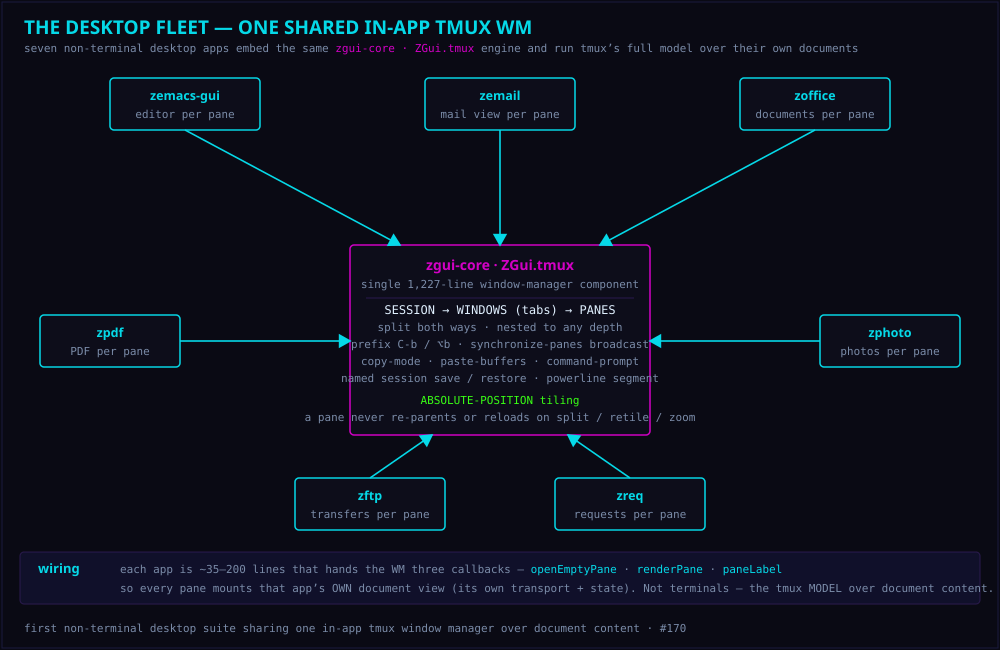
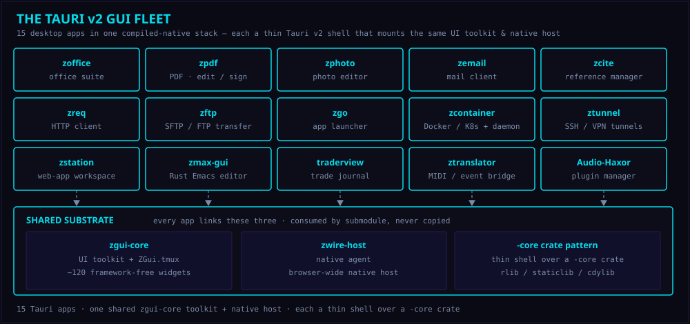
86
Pure-Rust embeddable reimplementations of named desktop tools (a "port family" — not firsts)
LOW
Many of the desktop -core engines are faithful pure-Rust reimplementations of an existing tool, so their features are parity, not invention, and they are consolidated here rather than carried as separate claims: zpdf-core→Acrobat (a full editor — render/annotate/form/sign/AES-256-vs-qpdf/ linearization/convert), zcontainer-core→Docker Desktop (Docker+K8s+Helm via bollard/kube-rs), zftp-core→Cyberduck (13-protocol OpenDAL + pure-Rust SCP), zreq-core→Postman (collections/ auth-signers/codegen/gRPC-Web), zemail-core→Thunderbird (IMAP/POP3/SMTP/PGP/CardDAV + a cross- client feature superset: Hey Screener, Proton expire, Gmail snooze…), zphoto-core→GIMP/Photoshop, zoffice-core→LibreOffice, zgo-core→Alfred, ztunnel-core→Tunnelblick (adds a native userspace WireGuard data path), zcite-core→Zotero. Basis: each project's README + PORT_REPORT. Caveat: parity features are not "world's firsts". The genuine novelty across this family is not any one app but (a) the shared embeddable-engine pattern (#162) and (b) the durable-dependency discipline (#163); the one app-level exception that is a distinct first is #89 below.
89
Self-hosting Docker daemon via Apple Virtualization.framework
MED
A Docker-Desktop replacement that provides its own dockerd by booting a Linux guest directly on macOS Virtualization.framework (objc2-virtualization) — no vfkit/limactl/qemu/Colima binary and no Docker Desktop dependency. Basis: zcontainer-core/README.md "Daemon management": src/daemon.rs, src/vm.rs (vm feature), scripts/build-guest-image.sh (Kata VZ kernel + Alpine/dockerd rootfs + vsock bridge), socket proxy to ~/.zcontainer/run/docker.sock. Caveat: the managed-VM path requires a signed tauri build (com.apple.security.virtualization); an unsigned build reports vm_runtime_unavailable, so end-to-end self-hosting isn't verifiable from a dev build.
94
General event-translation engine routing any trigger to a non-MIDI protocol matrix
MED
A BOME-MIDI-Translator-class engine whose Outgoing layer fans far beyond MIDI/keystroke into a large protocol matrix — OSC, Art-Net/DMX, sACN/E1.31, MQTT, WebSocket, raw TCP, HTTP, Ableton Link, eurorack CV/gate (DC-coupled audio), MTC/MMC/RTP-MIDI, gamepad rumble, HID — all from one rules VM, embedding into non-MIDI Tauri hosts. Basis: ztranslator/README.md Outgoing-actions table (backends rosc/rumqttc/tungstenite/rusty_link/cpal/gilrs), rules.rs integer VM, tauri/ plugin + frontend/ztranslator_view.js mountZTranslator. Caveat: PORT_REPORT self-reports 61.1% BOME coverage; OS-control + CV/gate are macOS-only.
95
Lossless clean-room BOME .bmtp round-trip
MED
A clean-room importer/exporter for BOME MIDI Translator Pro .bmtp projects that round-trips losslessly — undecoded encodings (MID1, KAM1, mouse, serial) are preserved verbatim so a project survives re-export even when individual entries aren't yet natively understood. Basis: ztranslator/README.md §0x03; bmtp/ module; Outgoing::Raw. Caveat: export is unsigned (no RSA signature), so signed BomeBox/MT-Player export is out of scope.
96
One workspace → desktop (embedded Postgres) and multi-user web (axum) from identical crates
MED
A trading journal shipping two binaries from one Rust workspace — a Tauri desktop app that downloads/runs an embedded PostgreSQL on first launch (auto-login, offline) and an axum web server on external Postgres (argon2+JWT) — sharing crates, schema, migrations, FIFO roll-up, and verbatim frontend. Basis: traderview/README.md §0x01-0x03; postgresql_embedded (~/.theseus), shared traderview-{core,db,import}; src-tauri holds Embedded across axum::serve. Caveat: dual-target embedded/external DB patterns exist generally; the specific novelty is modest.
97
On-device, LLM-free receipt + tax-form OCR with a US tax compute engine
MED
A trading journal bundling a no-cloud/no-LLM receipt + IRS-form OCR pipeline (Apple Vision/ Tesseract/PaddleOCR ensemble, W-2 / 1099- / 1098 parsers, 20-bucket Schedule C taxonomy) feeding a dependency-light US federal tax compute engine pinned to IRS Rev. Proc. 2024-40 with 218 unit tests. Basis: traderview crates — traderview-ocr (5.2k LOC), traderview-expense, traderview-tax (6.6k LOC, deps only rust_decimal+serde). Caveat:* the notable part is integration ($0/receipt, on-device) inside a trading app; test counts/LOC are README-reported.
98
stryke-JIT backtest engine + walk-forward + custom-indicator AST in a journal
MED
A trading journal embedding the stryke language's JIT as its backtest/strategy engine — JIT-compiled backtests, a walk-forward sweeper, a custom-indicator AST, and strategy alerts gated by optional stryke predicates with webhook payload templating. Basis: traderview/README.md §0x00 + traderview-core ("stryke-JIT backtest engine + walk-forward sweeper… custom-indicator AST"), traderview-stryke host bridge running stryke lifecycle hooks as sandboxed subprocesses. Caveat: an application of the fusevm/stryke runtime (#1); engine maturity not build-verified.
99
A shared cyberpunk widget library spanning a heterogeneous desktop-app suite
MED
~120 framework-free window.ZGui.* components — including DAW-grade controls (rotary knob, 88-key playable piano, modular patchbay with drag-to-connect bezier cables, ADSR/LFO/curve editors, dB faders, peak/LUFS meters) alongside tables, modals, charts, and shell chrome — consumed by submodule (never copied) as the single UI source across a whole suite of unrelated desktop apps (terminal, mail, FTP, PDF, container, trading, translator…). Basis: zgui-core/README.md (full webui/ table) + CONSUMERS.md (submodule-only rule). Caveat: shared component libraries aren't novel; the unusual part is one cyberpunk kit carrying both business-app widgets and synth/DAW hardware controls as plain static JS with no build step.
100
Enforced cross-app UI baseline via a headless CI gate
MED
A mandatory ZGui.appShell baseline (splash, ⌘K palette, rebindable shortcuts, settings, native OS menu) plus a headless render gate that fails any app's build if the baseline stamp/chrome or submodule placement is missing — mechanically enforcing one UI across the suite, with auto-installed Emacs/readline editing on every <input>/<textarea>. Basis: zgui-core/CONSUMERS.md §0 (appShell, scripts/baseline-gate.mjs, dataset.zguiBaseline, placement assertions), util.js. Caveat: a discipline/tooling invention, not user-facing.
101
Six browser power-tools in one MV3 extension with a pure-Rust native host
MED
One Chrome MV3 extension unifies a pass/browserpass-compatible vault (profile + credit-card autofill), a segmented multi-connection download accelerator, a JetBrains-style MRU tab switcher, fzf history, a Tampermonkey-equivalent userscript engine, full-page screenshot stitching, and a Wappalyzer-compatible detector over a vendored 3,993-fingerprint corpus — all backed by a single pure-Rust native-messaging host. Basis: zpwrchrome/README.md + zpwrchrome-host (Rust port of browserpass-native v3.1.2 + otp/search/dl.*, ureq+ rustls); 3004 JS + 127 Rust tests; lib/wappalyzer/engine.js. Caveat: each capability replaces a known tool; novelty is consolidation + a single static Rust host.
102
Pure-Rust segmented download accelerator that owns the browser's default
MED
A multi-connection (Range-segmented) download accelerator in a vendorable pure-Rust host (no aria2/axel binary) that intercepts every Chrome download by default, with truncation/premature-EOF detection, resume, cookie+UA forwarding, and a byte-count completion gate. Basis: zpwrchrome/README.md "Segmented download accelerator" (zpwrchrome-host dl.*, HEAD probe → N concurrent Range GETs, pre-allocated dest). Caveat: download accelerators are a known category; the angle is doing it as the default handler from a single Rust host.
103
MacVim-style native GUI wrapping a Rust Emacs port
MED
A native desktop GUI that wraps the zemacs Rust Emacs modal IDE by running it in an embedded PTY and driving it purely through ex-commands, with every GUI surface (menubar, toolbar, palette, dialogs, file tree) built from zgui-core. Basis: zemacs-gui/README.md — zpwr-embed-terminal PTY, open_intake.rs (mvim:// deep-link → :open), bundled zemacs+stryke sidecars, frontend/menu.js zgui widgets → PTY. Caveat: the "wrap-a-CLI-editor-in-a-window" pattern is MacVim; novelty is doing it for a new Rust Emacs entirely through a shared web widget kit + PTY.
104
First-class tmux client over the native wire protocol (live editing + profiles + dashboard)
HIGH
A terminal emulator that speaks tmux's native control protocol directly to the server socket (no tmux subprocess) and is the first to (a) live-edit a running tmux server's options/buffers/keybindings from its own UI, (b) capture entire-config + tmux-state into one-click switchable profiles, and (c) ship a custom live telemetry dashboard built from a real component library. Basis: zterminal/docs/INVENTIONS.md (3 documented firsts) backed by crates/ztmux-core; dashboard on zgui-core. Caveat: "first" is to the author's knowledge; the tmux-client and dashboard claims are documented as verified in-repo.
105
Unified Exposé + scrollback search across native panes and tmux panes
LOW
zterminal blends its own i3-style native split tree (one PTY per pane) with tmux so Exposé (⌃⌘E) tiles every native window and every tmux pane together, and ⌃⌘P greps every tmux pane's scrollback — treating native and tmux panes as one searchable surface, and decoding inline-image protocols (incl. Kitty animation) even when wrapped by tmux passthrough. Basis: zterminal/README.md (Exposé ⌃⌘E, search ⌃⌘P, native split tree, image protocols through tmux). Caveat: splits and image protocols individually exist (kitty/wezterm/iTerm2); the combination is the candidate; not in the repo's own INVENTIONS.md.
> zterminal is an Alacritty derivative (zterminal_core); base VT/grid/search/hints are > not claimed. The entries below are zterminal's own additions.
105a
Per-pane process/activity monitor spanning native panes and the reparented tmux server
MED
An in-app "Processes" tab renders a live CPU/MEM process tree rooted at every pane's shell — including descending into the tmux server's reparented children — and can signal/kill only pids that are descendants of its own panes. Basis: src/event.rs pane_process_tree() builds a ppid→children map from a sysinfo snapshot, seeds roots from wc.pane_shells() + ztmux_core::ops::panes() pids (labeled tmux <s>:<w>.<p>); "kill_process" IPC arm gates signals to the seen descendant set. Caveat: Unix-only; an inspector, not a top replacement.
105b
GUI env-var editor that hot-injects exports into every running shell
MED
Editing an env var in the control panel both persists it to [env] in zterminal.toml and live-broadcasts export NAME=value / unset NAME into the PTY of every already-running shell across all panes, so it takes effect without relaunching. Basis: src/settings.rs save_env_var()/delete_env_var() (toml_edit) then EventType::BroadcastInput; export_command() POSIX-single-quotes + leading space (to dodge HISTCONTROL=ignorespace); window_context.rs broadcast_input(). Caveat: injects a shell command — affects shells at a prompt, not arbitrary child programs.
105c
Native tmux session save/restore (resurrect/continuum) over the wire protocol
MED
Reimplements tmux-resurrect/continuum natively over tmux's binary wire protocol — snapshotting every session→window→pane with exact window_layout, cwd, and the pane process's full captured command line, then rebuilding the tree, optionally relaunching processes (resurrect-style whitelist) and replaying saved pane scrollback, with opt-in auto-restore on launch. Basis: crates/ztmux-core/src/snapshot.rs (<name>.json + <name>.contents/); proc.rs reads each pane's foreground command line natively (libproc KERN_PROCARGS2 / /proc, no pgrep); src/event.rs resumed() fires restore(...) off-loop; overlay ⌃⌘S. Caveat: live process state can't be restored (panes return as fresh shells with the command replanted); resurrect as a concept is prior art — the novelty is doing it natively over the wire from an emulator.
105d
Cross-session/cross-window tmux broadcast beyond synchronize-panes
MED
A broadcast overlay sends keystrokes (or snippets) to an arbitrary checked set of tmux panes spanning any windows and sessions at once — which native tmux can't do, since synchronize-panes is scoped to a single window. Basis: crates/ztmux-core/src/ops.rs broadcast_list() + send-keys toggle; src/settings.rs open_tmux_broadcast() + "tmux_broadcast_list" / "snippet_broadcast" arms; ⌃⌘B. Caveat: requires a running tmux server.
105e
Whole control plane as an in-process webview app built only from the shared component library
MED
zterminal's entire configuration/inspection surface (Settings, Dashboard, tmux, Keybindings, Logs, About, command palette, every overlay) is a single-binary in-process webview app built only from zgui-core, served over a custom zterminal:// protocol — a terminal whose whole control plane is a reusable design-system app, not native dialogs or a TUI. Basis: src/settings.rs embeds settings/frontend + zgui-core/webui via include_dir!, injects an IPC_BRIDGE (window.__ztermInvoke → wry postMessage → Rust dispatch()); same ZGui.fzf powers palette, history, and cross-pane search. Caveat: the dashboard sub-piece is already captured (#104); this is the broader umbrella.
105f
Shell-history palette that resolves the focused shell's real HISTFILE from its process env
LOW
The ⌘R history palette fuzzy-searches the actual history file of the focused shell — discovered by reading that child process's live HISTFILE env var — parsing zsh-extended/bash/fish formats, rather than assuming a default path. Basis: src/daemon.rs shell_histfile(pid) via KERN_PROCARGS2 / /proc; src/settings.rs resolve_histfile()/parse_history() (zsh : <ts>:<dur>;cmd-aware, tested). Caveat: history pickers exist; the per-shell HISTFILE-from-process-env resolution is the distinctive bit.
105g
Recent-directories tracker harvested from live pane cwd across native and tmux panes
LOW
Because OSC 133/OSC 7 don't carry cwd, zterminal harvests each open pane's live foreground-process working directory — from its own panes and every tmux pane — into a pinnable most-recent-first Recent Dirs list. Basis: src/recent_dirs.rs (~/.zterminal/recent_dirs.json); src/event.rs current_cwds() merges daemon::foreground_process_path(...) with tmux #{pane_current_path}. Caveat: sampled on tab refresh; Unix-only.
105h
Single pre-vte stream interceptor recovering four protocols vte drops, incl. through tmux passthrough
LOW
One scanner ahead of vte peels Kitty APC graphics, Sixel DCS, iTerm2 OSC-1337 images, and OSC 133 semantic-prompt marks out of the PTY stream — all of which stock vte discards or truncates — unwrapping tmux ESC Ptmux;… passthrough so each works inside tmux. Basis: zterminal_core/src/graphics/scanner.rs; shell.rs routes OSC 133 A/B/C/D through the same path, anchored to absolute scrollback lines. Caveat: WezTerm supports the image protocols; the unified pre-vte recovery incl. OSC 133 + tmux-unwrap is the combination.
105i
Failed-command gutter marks from OSC 133 exit codes
LOW
A thin left-margin gutter flags every prompt line and turns red when that command exited non-zero, driven by recovered OSC 133 D;exit marks. Basis: zterminal_core/src/shell.rs records exit_code per command zone; src/display/mod.rs shell_gutter_rects(...). Caveat: needs the shell-integration snippet; exit-status decorations exist (fish/iTerm2).
105j
Config-driven background image that renders behind cells even inside tmux
LOW
A GPU background image set via config (not an escape sequence) shows through translucent default-bg cells and keeps working inside tmux (which would strip a display escape); inline images can also draw behind text via negative Kitty z-index. Basis: src/config/window.rs (background_image, background_image_opacity); src/renderer/graphics.rs textured quads with z-order; live reload on path change. Caveat: kitty/others support bg images; the config-survives-tmux angle and z<0 behind-text are the distinctive parts.
105k
Zero-dependency icat that self-enables tmux passthrough via Kitty Unicode placeholders
LOW
The bundled zterminal-icat emits the Kitty protocol from any image using only base64 (+ sips on macOS), and — uniquely for an icat-style tool — enables tmux allow-passthrough itself and places the image via Kitty Unicode placeholders so it survives tmux redraws. Basis: extra/zt-icat; placeholder placement decoded in zterminal_core/src/graphics/placeholder.rs. Caveat: narrow helper script.
105l
Native menu, keybindings, and palette sharing one action-dispatch path
LOW
Every macOS menu item carries the same key-equivalent as its keybinding and dispatches the identical action object through the same run_palette_action path as the key press and the command palette — one source of truth for menu, key, and palette. Basis: src/macos/menu.rs builds a Cocoa NSMenu from config::bindings::platform_key_bindings, sending EventType::MenuAction. Caveat: an architectural single-source-of-truth, not a user-visible terminal first.
105m
Glassy translucent webview overlays composited over the live GL terminal
LOW
Control-panel and palette webviews render semi-transparent over the still-visible GPU terminal beneath, with a live opacity slider, by driving native window alpha. Basis: src/settings.rs set_overlay_opacity()/apply_overlay_alpha() set NSWindow.alphaValue (winit transparency crashes the view, so it uses AppKit directly). Caveat: macOS-only; cosmetic.
105n
Per-pane output triggers reacting to streamed rendered output
LOW
User-defined regexes match each pane's freshly-rendered output as it streams, firing a desktop notification, bell, or shell command ($ZT_TRIGGER_TEXT/$ZT_TRIGGER_NAME), scanning only lines completed since the last wakeup with a cooldown. Basis: src/triggers.rs (TriggerActionKind, COOLDOWN, ~/.zterminal/triggers.json); window_context.rs scan_pane_triggers(). Caveat: iTerm2 "Triggers" is direct prior art — not a first; included for completeness, the per-pane + zterminal-pane-model framing is the only distinguishing angle.
VIII. Editor & shell ecosystem
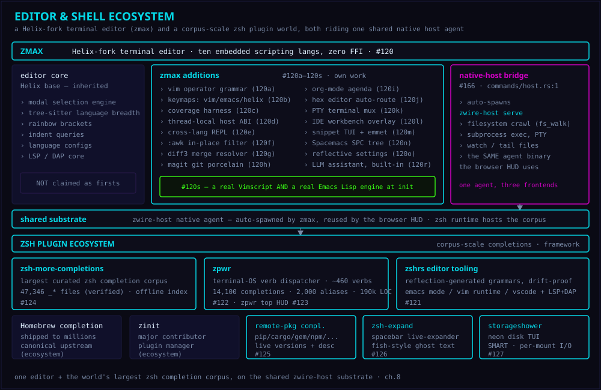
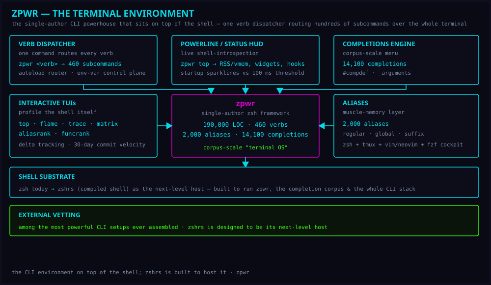
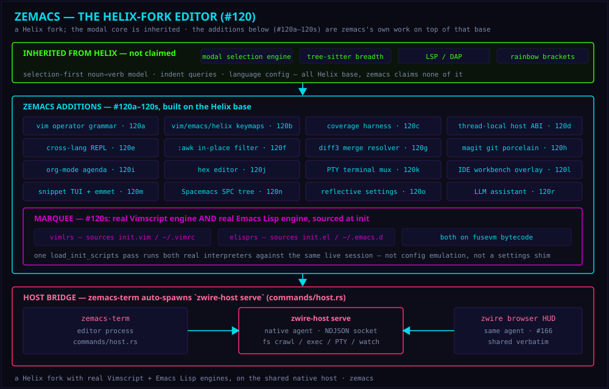
120
Five embedded scripting languages in one editor binary, zero FFI
MED
zemacs embeds five scripting interpreters — Emacs Lisp, Vimscript, AWK, zsh, and stryke — directly compiled into the binary with no external process and no C-ABI/FFI between them, all driving the live buffer through one uniform host API. Basis: zemacs/README.md:72 ("the only IDE to embed 5 scripting languages with zero external dependencies and no FFI between them"); book/src/scripting.md (:elisp/:vim/:awk/:zsh/:stryke, SPC a r unified REPL); each is a pure-Rust crate lowering onto shared fusevm bytecode. Caveat: overlaps #1 (the IDE-embedding angle of the same crate family); "world first" is the repo's own assertion; each interpreter exposes only a subset of its host API.
> zemacs's tree-sitter language breadth, rainbow brackets, indent queries, > and the core modal model are baseline editor capabilities and not claimed. The entries below (per CHANGELOG > + source) are zemacs's own additions on top of that base.
120a
Vim operator-pending grammar emulated on a selection-first engine
HIGH
zemacs reconstructs Vim's verb→noun operator-pending grammar (d{motion}, c{motion}, y{motion}, ciw/di(, df,/ct), . dot-repeat, q/@ macros, named marks, Replace mode) entirely on top of its noun→verb selection-first engine, without modifying the engine's selection model. Basis: zemacs-term/src/keymap/vim.rs (each operator is a nested submap whose motions run [collapse_selection, extend-motion, operate] so "operate over the motion" is reproduced; counts ride the engine prefix); the selection-first engine has no operator-pending mode. Caveat: Vim has the grammar; the novelty is emulating it over a fundamentally different (selection-first) core.
120b
Three runtime-swappable editing-model presets on one engine
HIGH
A single running editor exposes vim, emacs, and native-modal keymap personalities switchable live via :keymap <preset>, where the emacs preset reroutes the modal engine so the editor boots into Insert mode and binds real emacs chords there (modeless-on-modal). Basis: zemacs-term/src/commands/typed.rs:17260 (keymap cmd, set_keymap:18221 swaps live + sets default mode); keymap/emacs.rs (emacs bindings in Insert, C-space enters Select); keymap/vim.rs, keymap/default.rs. Caveat: multi-keymap configs exist (evil-mode), but those emulate the other model inside a host; here all three are first-class presets over one Rust selection engine, swappable without restart.
120c
Self-verifying feature-coverage harness ("port report")
HIGH
An anti-tamper instrument measures zemacs's own coverage of the cited Vim/Neovim + Emacs + Spacemacs feature surface by re-deriving the numerator from source on every run and flagging any mapping that points at non-existent code as "broken" — making it structurally impossible to inflate the number. Basis: port/README.md (evidence tokens static:/typable:/key: must resolve or count absent; broken must be 0); scripts/gen_port_report.py (46 KB); denominators from primary Neovim/Emacs/Spacemacs docs in port/data/; outputs docs/port_report.{md,html}. Caveat: coverage dashboards exist; the source-derived, broken-loud, self-auditing design as a shipped editor artifact is the unusual part.
120d
Thread-local raw-pointer host ABI bridging bare-fn-pointer interpreters to the live buffer
MED
One language-agnostic editor "host ABI" lets interpreters that expose only bare fn pointers with thread-local state mutate the live document, by publishing the in-flight compositor::Context through a type-erased thread-local pointer installed by an RAII guard for one synchronous on-thread eval, with a guard stack for nested evals. Basis: zemacs-term/src/commands/scripting/mod.rs (CX_PTR thread-local, CxGuard RAII, with_cx; api_insert/api_goto_char/api_delete_region build undoable Transactions); SCRIPTING_EMBED_PLAN.md §2.1. Caveat: the architectural substrate of #120, recorded separately as a distinct mechanism; unsafe, single-thread-only.
120e
Cross-language unified REPL with persistent per-language history
MED
A single REPL panel fronts all five embedded interpreters (elisp/viml/stryke/awk/zsh) behind one read-eval-print loop, cycling the active language with Tab and persisting separate input histories per language to ~/.zemacs/repl-history.toml. Basis: zemacs-term/src/ui/repl.rs (660 L, ReplLang enum, transcript scrollback); opened via :repl [lang] / SPC a r. Caveat: part of the captured scripting story; the one-panel-many-languages REPL with per-language persisted history is the distinct artifact.
120f
AWK as a built-in undoable region filter
MED
:awk <prog> runs an embedded AWK interpreter over the current selection (or whole buffer) and replaces it with the captured output as a single undo step, in-process with no external awk. Basis: zemacs-term/src/commands/scripting/mod.rs::run_awk_filter (runs awk::run outside any editor borrow, applies one Transaction); commands/scripting/awk.rs. Caveat: piping a selection through external awk (!awk) is a classic vi idiom; the novelty is the in-binary interpreter wired as an undoable in-place filter.
120g
Built-in diff3 three-pane merge-conflict resolver
MED
A native JetBrains-style three-pane (ours/result/theirs) conflict resolver with a diff3 base pane, inline char-level highlighting, per-block resolution, and a recomputed live Result pane written back as one undoable transaction. Basis: zemacs-term/src/ui/merge.rs (2211 L, imara_diff, DiffRow/Block/Resolution); :merge/:diff, ]n/[n. Caveat: 3-way merge tools are common standalone; embedding one as a terminal overlay in a modal editor is the novel part.
120h
Native magit-style git porcelain in a non-Emacs modal editor
MED
A magit-style interactive git porcelain (sectioned status, per-hunk staging, interactive rebase, branch/stash menus, commit-log + per-commit diff, ahead/behind counts) as a built-in terminal overlay. Basis: zemacs-term/src/ui/magit.rs (3162 L, parse_status unit-tested, stage/unstage/discard/commit, MagitLog/MagitShow); :magit/:git/:gst. Caveat: Magit (Emacs) and porcelains (lazygit) are prior art; novelty is native-Rust and built into this editor.
120i
Org-mode subset with a cross-file date-aware agenda
MED
An org-mode subset (outline folding, TODO cycling, capture) plus a date-aware agenda that aggregates TODO/DONE headings from all open .org buffers and a shallow filesystem walk, bucketing Overdue/Today/Upcoming with a dependency-free date model. Basis: zemacs-term/src/ui/org_agenda.rs + commands/org.rs (24 KB, parse_agenda/today unit-tested); :org-agenda/:agenda, :org-capture. Caveat: Org-mode is canonical Emacs; this is a native reimplementation of a slice (babel/export/recurring deferred).
120j
Byte-faithful hex editor with automatic binary-file routing
MED
Binary files a text editor would reject instead open automatically in a built-in xxd-style hex editor backed by a raw Vec<u8> (not the text rope), with nibble/ASCII overwrite editing and byte-faithful round-trip on save. Basis: zemacs-term/src/ui/hex.rs (720 L; raw-byte backing, Ctrl-s writes via std::fs::write); CHANGELOG ("binaries now open here instead of being rejected"). Caveat: hexl-mode/standalone hex editors are prior art; novelty is the auto-routing-on-binary-detection in a modal editor. Overwrite-only (no length change).
120k
Integrated PTY terminal multiplexer inside the editor
MED
Real PTY-backed shells in editor panes (vt100-parsed grid blitted to the surface) with its own C-\ window-leader for split/focus and click-to-focus across panes — a small terminal multiplexer living inside the modal IDE. Basis: zemacs-term/src/ui/terminal.rs (portable_pty + vt100, background reader thread, F12 detach); :terminal/:term, SPC p '. Caveat: integrated terminals exist (Emacs/VS Code); the multiplexer-style window leader + per-pane PTY in a modal editor is the addition.
120l
IDE workbench with persisted layout and tree-sitter structure outline
MED
A JetBrains-style workbench renders inside the editor view — project file tree, tree-sitter structure outline, problems/run panels, right-hand error-stripe minimap — entirely from in-process editor state (no PTY bridge), with the whole layout (drawer widths, folds, hidden panels, minimap, colorscheme) persisted to appdata and restored. Basis: zemacs-term/src/ui/ide.rs (4883 L), file_tree.rs, run.rs (live console with ANSI scrubbing), run_config.rs; :ide/:workbench/F2. Caveat: IDE chrome is common in GUI IDEs; doing it as a pure-terminal overlay fed only from editor state is unusual.
120m
Snippet library with live tab-stops overriding emmet, per-language scoped
MED
A CRUD snippet-library TUI whose bodies are validated against the LSP-snippet engine; typing a trigger + Tab expands with live ${1:…}/$0 tab stops, with user triggers taking priority over emmet abbreviation expansion and scoped per language. Basis: zemacs-term/src/ui/snippets.rs (validates via zemacs_core::snippets::Snippet, persists snippets.toml); emmet_expand/ snippet_expand. Caveat: yasnippet/LSP snippets are prior art; the integrated CRUD TUI + emmet-priority + LSP-syntax validation combo is the addition.
120n
Spacemacs-style discoverable leader with tunable which-key
MED
A labelled Spacemacs SPC command tree ported onto the zemacs modal engine with which-key-style popups whose auto-display is tunable per-prefix (auto-info, auto-info-exclude), plus a frecency-ranked recent-file picker and a startify start screen. Basis: keymap/vim.rs SPACEMACS_TYPABLE table; docs/spacemacs_gaps.md (tracks 358/702 remaining); frecent_file_picker + ui/startify.rs. Caveat: which-key + Spacemacs leaders are Emacs prior art; the novelty is the native port onto its selection engine with per-prefix tunability and a gap-tracked coverage doc.
120o
Reflection-based auto-generated settings editor
MED
The in-editor Settings page is not a hand-maintained schema — it serializes the live editor Config to TOML on every render and exposes every leaf (typed bool/int/float/str/enum/raw-TOML), writing edits back to config.toml with live reload. Basis: zemacs-term/src/ui/settings.rs (Kind/ENUMS cycle support). Caveat: auto-generated config UIs exist generally; a fully reflective settings TUI for a terminal modal editor is unusual.
120p
Wildfire expand-region bound to <ret>
LOW
Pressing <ret> in Normal mode selects the closest text object and grows to the next enclosing one on repeat; <backspace> shrinks — a Wildfire/expand-region port wired to the engine's text-object hierarchy. Basis: zemacs-term/src/keymap/vim.rs:255-259 ("ret" => wildfire, "backspace" => wildfire_shrink). Caveat: expand-region / wildfire.vim are direct prior art; this is a native port (the engine's expand_selection isn't the ret-grows/backspace-shrinks UX).
120q
Bundled built-in text-utility command suite
LOW
A broad in-editor text-tooling suite usually requiring plugins ships built-in: arithmetic :calc, UUID v1/v4 insert, lorem-ipsum, password generators (simple→paranoid→phonetic→numeric), base64/base64url, ROT13/Caesar, NATO phonetic, JSON omit/table, markdown-table align, delimiter align, narrow-to-region, and a spell checker (]s/z=/zg). Basis: book/src/generated/{typable-cmd.md,static-cmd.md}; calc at commands/typed.rs:12374. Caveat: each utility individually mirrors a Spacemacs/Emacs/vim plugin — not novel in isolation; the candidate is the breadth shipped built-in in one binary (a coverage note more than an invention).
120r
Built-in LLM assistant compiled into a CLI/Emacs-style editor — no plugin, out of the box
MED
zemacs ships a Cursor-style AI assistant compiled into the IDE binary itself — bound to SPC a i, it sends the current selection (with language fence) as code context to a pluggable LLM backend (Anthropic default, OpenAI alternate) behind one Provider trait, runs the network call off the UI thread, and renders the reply in a scratch buffer — with no package to install, no external agent process, and no FFI. Anthropic is the default with ANTHROPIC_API_KEY, so a freshly-built binary is AI-capable out of the box. Basis: zemacs-term/src/ai/{mod,anthropic,openai}.rs (the Provider trait + two vendor backends, ZEMACS_AI_PROVIDER/ZEMACS_AI_MODEL env config); ai_chat at zemacs-term/src/commands.rs:8859 (selection→fenced-context prompt → scratch buffer, spawn_blocking off the UI thread); keymap binding zemacs-term/src/keymap/vim.rs:889 (SPC a i). Caveat: the terminal/Emacs-style + built-in, no-plugin framing is the angle — GUI editors ship AI built-in (Cursor, Zed, Windsurf), and Emacs/Neovim get LLMs via packages (gptel, copilot.el, avante.nvim, codecompanion), so this is "first CLI/Emacs-style IDE with the assistant compiled in," not first-AI-editor; "no prior art found" is non-exhaustive, not proven. It is also self-described Phase 1 — non-streaming single-turn chat; the streaming chat panel, inline edit, and autonomous agent are scaffolded in the module docs but not yet wired. A zemacs addition.
120s
First editor to source both a real Vimscript engine and a real Emacs Lisp engine at init
HIGH
At startup zemacs runs one load_init_scripts pass that sources both interpreter families through genuinely embedded engines: Emacs Lisp init (init.el, and — opt-in — the user's personal ~/.emacs.d/init.el / ~/.config/emacs/init.el / ~/.emacs) executed by the embedded elisprs interpreter, then Vim config (init.vim, and — opt-in — ~/.vimrc / ~/.vim/vimrc / ~/.config/nvim/init.vim) executed by the embedded vimlrs Vimscript engine. Both are real interpreters wired to the live buffer/keymap/options — not config emulation or a settings shim — so a single editor honours a .vimrc's :set/:map/:colorscheme and an init.el's Lisp against the same session at boot. Basis: zemacs-term/src/commands/scripting/mod.rs (load_init_scripts — elisp candidates + elisprs::eval_str, then the #[cfg(unix)] vimlrs :source block), called from zemacs-term/src/main.rs:175 via Application::load_init_scripts (zemacs-term/src/application.rs:503); end-to-end tests zemacs-term/tests/{vimrc_theme,custom_source_files}.rs. Caveat: Emacs sources init.el (its native language) and Vim/Neovim source a vimrc (native, plus Lua in Neovim); evil-mode emulates Vim inside Emacs but does not run a real Vimscript interpreter over your .vimrc, and no editor was found that boots by executing both a Vim engine and an Emacs Lisp engine. Personal-config sourcing is off by default (zemacs is neither Vim nor Emacs and won't silently inherit either); the "first" framing rests on a non-exhaustive search. A zemacs addition.
121
Reflection-generated, drift-proof editor language tooling for a shell
MED
Editor support (Emacs major mode, Vim/Neovim runtime, VS Code extension) for the zshrs shell whose syntax grammars/font-lock are auto-generated from the shell binary's own reflection tables (zshrs --dump-reflection) so they carry the complete builtin/extension surface and never drift, plus LSP (zshrs --lsp) and DAP (zshrs --dap). Basis: vscode-zsh/README.md:34-37 (grammar via gen_grammar.sh, standalone source.zshrs, 113 extensions own scope, DAP Implemented); vim-zsh/README.md:32 ("never drifts"); emacs-zsh/README.md (zshrs-mode, reflection-driven font-lock, lint via zshrs -n, eglot LSP). Caveat: the novel substrate is zshrs itself; these three are editor front-ends; reflection-driven grammar gen + shell DAP are the distinctive bits.
122
Namespaced verb-dispatcher "terminal OS" at corpus scale
MED
A single-author zsh framework that is simultaneously a namespaced zpwr <verb> CLI dispatcher (~460 verbs), a fully-wired zsh+tmux+vim/neovim+fzf cockpit, and an env-var control plane spanning the entire terminal. Basis: zpwr/autoload/common/zpwr dispatcher; DESCRIPTION.md:55 (460 verbs, 14,100 completions, 2,000 aliases, 190,000 LOC); README.md:47-49 positions vs Dotmatrix/famous dotfiles. Caveat: "category of one" is positioning, not prior-art-proven; oh-my-zsh/prezto/large dotfiles occupy adjacent space; counts self-reported.
123
Live shell-introspection HUD with self-history sparklines
LOW
zpwr top is a live dashboard profiling the shell itself — RSS/vmem, history size, zle widgets, hooks, function/completion/alias/builtin counts with delta tracking — plus sparklines of the last 40 shell startup times (color-coded vs a 100 ms threshold) and 30-day commit velocity, with startup times auto-logged each init. Basis: zpwr/README.md:890; startup history to $ZPWR_LOCAL/startup_history.log; aliasrank/funcrank (README.md:1000,1010). Caveat: an instrumentation convenience, not foundational; not runtime-verified.
124
Largest curated zsh completion corpus as an offline reference index
HIGH
A ~47k-file curated zsh completion corpus (claimed largest), much auto-generated by scraping --help/man/web then hand-verified, that doubles as a greppable offline reference index for command interfaces of tools you don't have installed. Basis: verified find -name '_*' → 47,346 files (README claims "47,332"); zsh-more-completions/README.md:27,52,56-60 (auto-generate-then-curate pipeline, uniform #compdef/_arguments, architecture_src/, ZUnit suite, scientific ecosystems: BIND9, EPICS, GRASS GIS, Quantum ESPRESSO, BLAST+, CCP4). Caveat: "largest in existence" is unprovable; auto-gen depth varies; scale is the feature, not a new mechanism.
125
Remote-package completions with versions + descriptions in the menu
LOW
Several completion plugins fetch live remote package data with inline descriptions into the zsh menu (pip/cargo/gem/cpan/dotnet/npm/xcode). Basis: zsh-pip-description-completion/README.md + siblings zsh-cargo-completion, zsh-gem-completion, zsh-cpan-completion, zsh-dotnet-completion, zsh-better-npm-completion, zsh-xcode-completions. Caveat: one collective candidate; remote-data completions exist elsewhere; novelty is breadth. pip search is disabled upstream by PyPI, so that path may be degraded.
126
Spacebar live-expander with fish-style ghost-text preview of expansions
MED
A pure-zsh plugin that rewrites the spacebar into a live expander for regular/global/suffix aliases, typo corrections, globs, parameters, history, and command-substitution — parsing deep prefix chains (sudo/env/nice/…) to find the real command — and shows fish-style ghost text previewing what an alias would expand to before you press space. Basis: zsh-expand/README.md:73,115-127; ghost text in zsh-expand.plugin.zsh:419-420 (ZPWR_EXPAND_PREVIEW, zle-line-pre-redraw). Caveat: zsh-abbr/fish abbreviations exist; the distinctive bits are the ghost-text preview of alias expansion + deep prefix-chain parsing; test count self-reported.
127
Neon disk TUI combining live per-mount I/O, SMART health, and free-space alerts
LOW
A Rust/ratatui TUI unifying live disk-usage bars, live per-mount read/write throughput (Linux /proc/diskstats, macOS), SMART health status (macOS diskutil), and threshold-crossing free-space alerts in one screen. Basis: storageshower/README.md:59,101-118; Rust crate (ratatui + crossterm + sysinfo). Caveat: ncdu/dust/gdu cover disk-usage TUIs; the combination of live I/O + SMART + alerting is the differentiator, not a new algorithm.
X. Round-2 deep-dive additions
A second pass did source-level deep sweeps of the projects that were thinly covered. Most of the desktop -core apps are honestly ports (zpdf→Acrobat, zcontainer→Docker Desktop, zftp→Cyberduck, zreq→Postman, zemail→Thunderbird, zphoto→GIMP, zoffice→LibreOffice, zgo→Alfred, ztunnel→Tunnelblick) — competent pure-Rust reimplementations, but parity features aren't "firsts", so they were not expanded into the ledger (see the consolidated note at #86). The genuinely-inventive finds below are the exceptions: traderview (an unusually deep, original system) and zpwrchrome (architecturally novel), plus original work in zgui-core, a few standout shared libraries, ztranslator's beyond-BOME extensions, and two cross-stack meta-patterns.
traderview — institutional-grade quant inside a retail journal
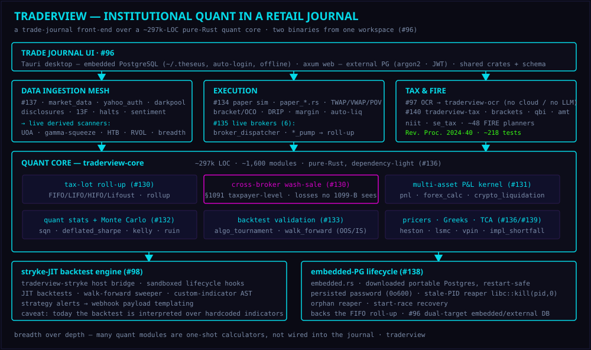
130
Multi-method tax-lot engine + dual-layer (per-broker & cross-broker) wash-sale detection
HIGH
The roll-up closes lots by FIFO/LIFO/HIFO/loss-harvest ("Lifoust") and runs IRS §1091 wash-sale detection both within one broker AND at the taxpayer level across brokers (catching disallowed losses no single 1099-B sees), plus §988 ordinary-income forex tracking. Basis: traderview-core/ src/{rollup,tax_lot_optimizer,wash_sale,cross_broker_wash,forex_988}.rs, all tested. Caveat: two wash-sale models (per-pair vs per-replacement); cross-broker needs all brokers loaded.
131
Multi-asset-class P&L kernel (options 100×, futures tick math, forex pips, crypto perps)
HIGH
One P&L kernel computes realized P&L per AssetClass — equity options via contract multiplier, futures via tick_size/tick_value (with point-value fallback + zero-tick guard), forex via JPY-aware pip math, and crypto incl. isolated-margin perpetual liquidation price and staking/airdrop income. Basis: traderview-core/src/{pnl,forex_calc,crypto_liquidation,crypto_staking}.rs. Caveat: options as discrete legs; no OCC/OSI symbol decoding / combo recognition.
132
Quant statistics + correlation-aware position sizing + Monte Carlo equity forecaster
HIGH
Computes R-multiple, MAE/MFE edge ratio, expectancy, SQN, Sharpe/Sortino (rolling + deflated), Kelly (discrete/continuous/dynamic), correlation-drag-adjusted sizing with a don't-stack-correlated gate and Marchenko-Pastur RMT covariance cleaning, and a Monte Carlo equity forecaster (percentile fans, max-drawdown distribution, probability of ruin) bootstrapped from the trader's own R-multiples. Basis: traderview-core/src/{r_multiple,sqn,deflated_sharpe,kelly_criterion,position_size, marchenko_pastur_cleaning,monte_carlo,equity_forecast}.rs. Caveat: MC assumes IID R resampling.
133
Backtest validation & regime-attribution suite
HIGH
Beyond running a strategy it validates and attributes it: a tournament ranking every registry strategy on one symbol/period, regime-conditional (trend/range/chop) attribution at entry bar, strategy-portfolio Pearson diversification benefit, post-backtest trade-PnL bootstrap MC, and walk-forward efficiency (OOS/IS) as an overfit detector. Basis: traderview-core/src/{algo_ tournament,algo_regime_attribution,algo_strategy_portfolio,algo_backtest_mc,algo_walk_forward}.rs; 22-strategy library. Caveat: backtest is interpreted over hardcoded indicators (no JIT/DSL — see #98).
134
Broker-grade paper-trading simulator (algorithmic parent orders, margin, corporate actions)
HIGH
A full simulated brokerage: TWAP/VWAP/POV parent-order slicing, bracket/OCO, trailing/stop-limit/ on-close/recurring orders, DRIP, auto dividend crediting (long-credit/short-debit from the fill ledger), value-preserving split adjustment, short-borrow fees, margin + margin interest, cash interest, and auto-liquidation. Basis: traderview-db/src/paper_*.rs; migrations 0076–0102. Caveat: fills modeled against polled quotes, not a matching engine.
135
Live broker execution + WebSocket fill pumps across six brokers
MED
Native REST trading clients + reconnecting WS fill-pumps for Alpaca/IBKR/Schwab/Tastytrade/Tradier/ Webull(RO), routed by a dispatcher that logs order intent and feeds fills into the roll-up. Basis: traderview-db/src/{alpaca,ibkr,schwab,tastytrade,tradier,webull}_trading.rs + *_pump.rs, broker_dispatcher.rs. Caveat: WIP — only Alpaca fully wired; others return integration_pending.
136
~1,600-module dependency-light pure-Rust quant compute library
HIGH
traderview-core is a ~297k-LOC, ~1,600-module pure-compute quant library: exotic option pricers (semi-analytic Heston, American LSMC, Asian/barrier/lookback/chooser/cliquet/quanto, Garman-Kohlhagen, Bachelier, Black76, swaption), first/second-order + portfolio Greeks, fixed income (Nelson-Siegel- Svensson, key-rate/effective/Macaulay durations, OAS), microstructure (Kyle's lambda, VPIN, Amihud, order-flow imbalance), forensic scores (Altman Z, Beneish M, Piotroski F, Zmijewski), and stats/ML (GARCH/GJR, Kalman family, ARIMA, Markov-switching, ridge/lasso/elastic-net/quantile regression, wavelet, bootstrap) — with a self-contained complex type to stay dependency-free, zero todo!/unimplemented!, each #[cfg(test)]. Caveat: breadth over depth; many are one-shot calculators not wired into the workflow.
137
Real-time market-data ingestion mesh + derived live scanners
HIGH
Background pollers/WebSockets ingest Yahoo (cookie+crumb auth), Finnhub WS ticks, FINRA Reg SHO short-volume/dark-pool, SEC EDGAR (Form 4 + 13F), Nasdaq halts, Reddit WSB + StockTwits sentiment, and CoinGecko — then synthesize live derived scanners: unusual-options-activity rotator, dark-pool %, gamma-squeeze/market-gamma regime, hard-to-borrow ranker, RVOL acceleration, breadth divergence, and a confluence autotrade pipeline. Basis: traderview-db/src/{market_data,yahoo_auth,short_interest, darkpool,disclosures,thirteen_f,halts,sentiment}.rs + derived {uoa_stream,gamma_squeeze,htb_ranker, rvol_accel,breadth_divergence,confluence_autotrade}.rs. Caveat: X/Twitter is a stub; several feeds use unofficial endpoints that can break.
138
Embedded-Postgres lifecycle hardening (persisted password + stale-PID reaper)
HIGH
Makes a downloaded portable Postgres survive restarts/crashes: persists a generated password to a 0o600 file (defeating the library's per-launch random password that would lock the user out) and cleans stale postmaster.pid lockfiles by reading the PID and probing liveness via libc::kill(pid,0), with an orphan reaper and start-race recovery. Basis: traderview-db/src/ embedded.rs. Caveat: distinct from #96; Windows path unconfirmed.
139
Execution-quality TCA + trade tape-replay + per-setup attribution
MED
Institutional-style transaction-cost analysis in a retail journal: Almgren-style implementation- shortfall decomposition, VWAP-relative and per-symbol slippage, a fill-quality report, time-and-sales tape replay reconstructed per trade, plus named-setup attribution (win rate / expectancy / avg-R / profit factor by setup tag) and an R-multiple distribution report. Basis: traderview-core/src/ {implementation_shortfall,vwap_slippage,setup_catalog}.rs; traderview-db/src/{fill_quality,tape_ replay,r_distribution}.rs. Caveat: needs arrival-price/VWAP data per execution.
140
Embedded personal-finance / FIRE planning suite inside a trading journal
HIGH
The same workspace ships ~48 personal-finance planners — Coast/Barista/Lean/Fat FIRE, glide-path and bond-tent decumulation, debt avalanche/snowball, PSLF, Roth-vs-traditional, RMD, Social-Security claiming age, 529/FAFSA EFC, mortgage/HELOC/rent-vs-buy, CD/bond ladders, I-Bond/TIPS, budgeting, net-worth — alongside the IRS Schedule C/D/E + federal tax engine (brackets, SE tax, QBI §199A, AMT, NIIT, credits; ~218 tests pinned to Rev. Proc. 2024-40). Basis: traderview-core/traderview-db planners + traderview-tax/src/{engine,brackets,se_tax,qbi,amt,niit,credits}.rs + traderview- expense/src/{schedule_e,schedule_d}.rs. Caveat: EITC unimplemented; constants are 2025-specific.
zpwrchrome — a genuinely unique browser power-suite
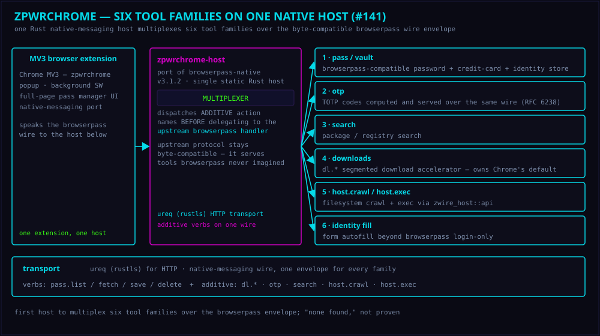
141
Single native host multiplexing six tool families over the browserpass wire envelope
HIGH
Five non-pass tool domains (dl.*, otp, search, run.spawn, zcite.save) are smuggled through the browserpass-native v3.1.2 protocol by dispatching additive action names before the upstream switch and deliberately reusing BP error codes, so a strict 1:1 port of the Go binary stays unmodified while the host serves tools browserpass never imagined. Basis: src/bin/zpwrchrome_host.rs (double-parse + dispatch ordering), src/extensions/mod.rs, frame.rs. Caveat: the pass half is faithful parity; the novelty is the layering discipline.
142
Filesystem-as-IPC, stateless-host + detached-per-job download worker model
HIGH
Instead of a long-lived daemon (IDM/aria2), every dl.add spawns a detached --dl-worker <gid> process owning the transfer, with all coordination through per-gid JSON state files guarded by O_EXCL locks — so short-lived host invocations (dl.pause/resume/list) mutate a running download they share no memory with, and jobs survive service-worker death. The transfer itself is the Range-segmented multi-connection accelerator that takes over Chrome's default download. Basis: src/extensions/dl.rs (spawn_worker with setsid + FD-close sweep, with_gid_lock). Caveat: polling control (100–250 ms); Unix-only.
143
Truncation-integrity gate — never reports a short CDN download as complete
HIGH
A premature EOF (CDN closing before Content-Length bytes) is classified as resumable, a final byte-count gate refuses to stamp a job done below Content-Length, and forward progress on resume is excluded from the retry budget so a repeatedly-truncating server still finishes — directly fixing the bug class where Chrome reports a corrupt partial as 100%. Basis: dl.rs run_worker terminal block, stream_into_file Ok(0)→Transient. Caveat: byte-count only — no content checksum.
144
pass as a structured identity/credit-card vault where the store IS the schema
HIGH
Profile and credit-card autofill is driven by profile/* and creditcard/* gpg entries whose keys are literally WHATWG autocomplete tokens (or longest-match synonyms), with alias-chain backfill (cc-exp↔month/year, name↔given/family) and a React/Vue-safe native value-setter across all frames — turning UNIX pass into a 1Password-class identity filler with no separate database. Basis: lib/identity-tokens.js, background.js fillIdentityForm(). Caveat: browserpass does login fill; the new part is the schema-as-store + alias backfill.
145
In-extension Web Crypto TOTP/HOTP decoupled from pass otp and gpg PATH
MED
OTP codes are computed inside the extension via Web Crypto (HMAC-SHA1/256/512, RFC 6238/4226) directly from the stored otpauth:// URL, sidestepping both the pass-otp gpg extension and the Chrome-spawned-host PATH problem (where pass lives in a dir not on the host's launch PATH). Basis: lib/totp.js, tested. Caveat: a re-implementation; the delta is the dependency/PATH decoupling.
146
MV3-native userscript engine on chrome.userScripts with race-safe serial sync
MED
A Tampermonkey-equivalent built on Chrome 120+'s chrome.userScripts (USER_SCRIPT world + configureWorld), injecting a GM_* shim as prepended source, with a single-flight serial sync chain that defeats the "Duplicate script ID" race across concurrent registrations, plus auto-expansion of bare-host @match to *.host; falls back to webNavigation+scripting injection on older Chrome. Basis: background.js syncUserScripts, lib/gm-shim.js, lib/userscript.js. Caveat: GM_* is a subset; native mode needs the per-extension toggle.
147
Local Wappalyzer engine with one-pass page-side DOM-rule pre-flight
MED
A from-scratch JS reimplementation of every Wappalyzer matcher group plus implies/requires/excludes graph rewrites and \1 version backrefs, where all ~1,045 DOM-selector rules are evaluated in a single injected querySelector sweep keyed for O(1) lookup — fully offline in an MV3 service worker, no cloud call. Basis: lib/wappalyzer/engine.js; header capture via webRequest.onCompleted. Caveat: corpus vendored upstream; novelty is the offline MV3 engine + batched DOM pre-flight.
148
Debugger-free full-page screenshot with overlap-stitch sticky suppression
MED
Captures off-screen content without the chrome.debugger permission (no "DevTools attached" banner) and eliminates repeated sticky/fixed banners purely by overlapping each scroll step by 200 px so the next tile overwrites them (no DOM mutation), then stitches on an OffscreenCanvas in the service worker. Basis: lib/screenshot.js. Caveat: scroll-capture is GoFullPage's approach; deltas are the no-debugger stance + the chunked write path (#149).
149
Sessionized chunked-base64 write protocol to beat Chrome's 1 MiB native-messaging ceiling
MED
A host action streams payloads larger than Chrome's ~1 MiB host→extension cap by splitting base64 across N dl.writeFileChunk calls keyed by a sanitized sessionId, appending into a .part scratch file, then atomically renaming to the download dir — the mechanism that lets a multi-megapixel screenshot PNG land on disk at all. Basis: dl.rs dl_write_file_chunk + self-contained RFC 4648 base64. Caveat: reusable platform-limit workaround (overlaps #148).
150
No-shell post-download command runner
MED
Per-rule basename-glob→argv post-download automation executes via std::process::Command with no shell anywhere on the path, so {path}/{dir}/{name} substitution carries zero quoting/injection surface, gated by an optional Run/Skip confirmation that survives SW suspension, with captured output (64 KiB cap) and a timeout that kills runaways. Basis: zpwrchrome-host/src/extensions/ run_command.rs. Caveat: pipes/redirects require explicit bash -c.
151
File-decoupled "Save to zcite" web connector
MED
Extracts CSL-JSON (Highwire citation_*, Dublin Core, OpenGraph, schema.org JSON-LD) and the host drops it as a plain file into zcite's inbox dir — computed with the same dirs crate zcite-core uses so paths agree — so the MIT extension/host act as a Zotero-Connector for a separate reference manager while sharing only a file format and a path, never linking the paid engine. Basis: lib/zcite- extract.js; zpwrchrome-host/src/extensions/zcite.rs. Caveat: needs zcite running.
152
JetBrains-switcher deltas: named scenes, opener-tree forest, frecency, domain-hue minimap
MED
Beyond porting JetBrains' Recent-Files UX, the tab switcher adds save/restore of named tab "scenes" (persisted across restart), an opener-tree forest reconstructed from openerTabId with iterative flatten (50k-deep chains without stack overflow), frecency re-ranking, and a domain-hue minimap. Basis: lib/util.js, background.js scene handlers. Caveat: individual features exist elsewhere (OneTab/Workona); novelty is bundling into the JetBrains-modal idiom.
zwire — a Chromium browser with built-in tmux-style multiplexing
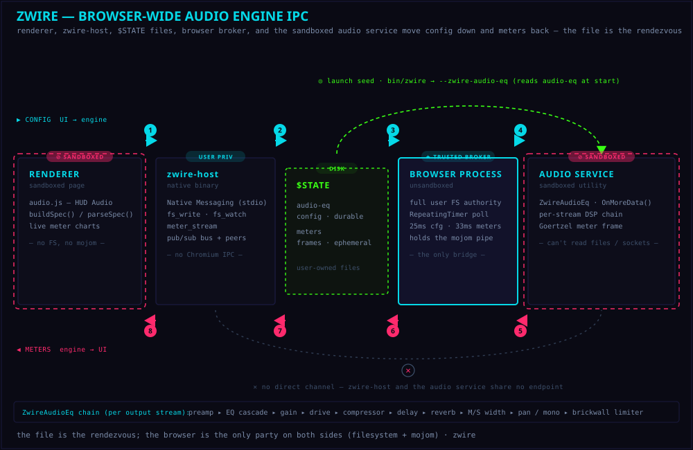
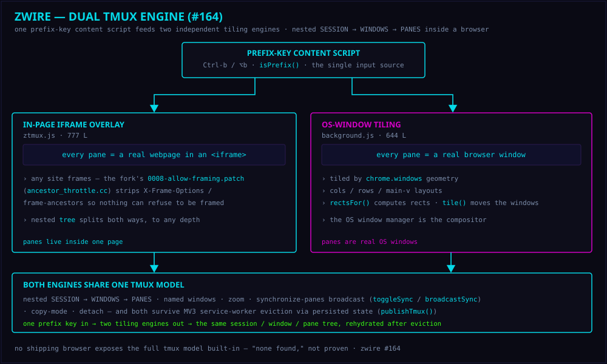
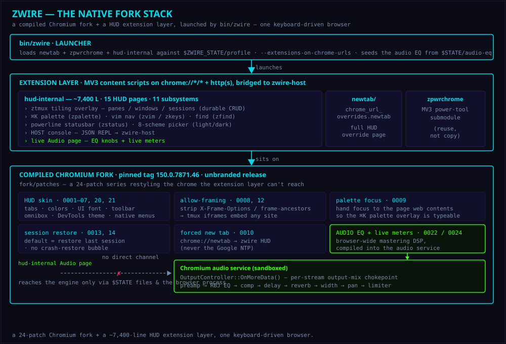
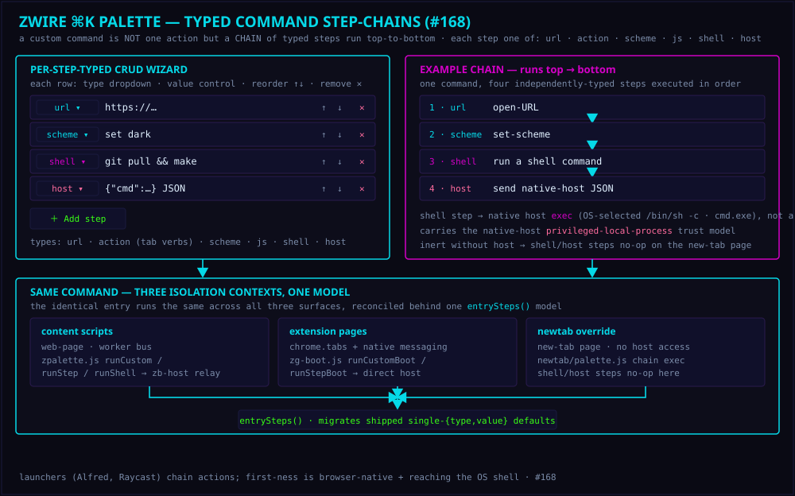
164
Web browser with a built-in tmux-style pane/window/session multiplexer
MED
zwire (a rebranded Chromium) ships tmux's full control model inside the browser driven by a prefix key (Ctrl-b, ⌥-b fallback) — not a two-pane "split view" but nested SESSION → WINDOWS → PANES with splits both directions to any depth, named windows, zoom, synchronize-panes typing broadcast, copy-mode, and detach — in two independent engines: an in-page iframe overlay where every pane is a real webpage (any site framed by stripping X-Frame-Options / frame-ancestors), and an OS-window tiling engine where panes are real browser windows tiled by chrome.windows geometry (cols/rows/main-v layouts), both fed by one prefix-key content script and surviving MV3 worker eviction via persisted state. Basis: zwire/extensions/hud-internal/ztmux.js (iframe overlay, isPrefix() Ctrl-b/⌥-b, toggleSync()/broadcastSync(), nested tree splits, the full C-b : command CLI + copy-mode); zwire/extensions/hud-internal/background.js (TMUX window/pane model, tmuxCmd() split/nav, rectsFor() layouts, tile(), publishTmux() state persist); zwire/newtab/tmux-pane.js pane forwarder; the fork's 0008-allow-framing.patch (renderer_host/ancestor_throttle.cc) bypasses X-Frame-Options natively so any site frames into the N-pane tiling. Caveat: "None found", not proven — a web survey found terminal multiplexers (tmux/Zellij) and browser tab-tiling / split-view features (e.g. Vivaldi), but no browser exposing the full tmux model (prefix key, named windows, sessions, nested splits, synchronize-panes) built in; the search is not exhaustive. Runs today as an MV3 extension on unbranded Chromium; the native fork patch is authored/apply-clean but the whole-chrome fork is an optional ~100 GB source build. synchronize-panes relays a semantic-token subset (printable keys + C-w/C-u), not arbitrary keystrokes.
165
Web browser with a tmux/powerline statusbar pinned to every page
MED
zwire renders a real tmux-style powerline statusbar (full ►/◄ chevron segments, alternating shade blocks) fixed to the bottom of every web page, fusing tmux session state with live machine telemetry: LEFT shows the ZW signature, the C-b prefix block that lights when the multiplexer prefix is armed, active window/pane list, color scheme, VIM mode, and ⌘K; RIGHT streams real host stats from the native host — CPU · MEM · SWAP · DISK · IO · NET · LOAD · UP · TEMP · BATT · LAN · WAN · host · clock — themed by the active HUD scheme. Basis: zwire/extensions/hud-internal/zstatus.js (powerline .sig/.pll/.plr chevron CSS, setTmux() reads zb_tmux, refreshSys() reads zb_sys, prefix-armed indicator off zb_tmux.armed, plus the session/window name segment); telemetry from zwire/extensions/hud-internal/native/zwire-host/src/sysmon.rs (cpu/mem/load/net/temp via sysinfo). Caveat: "None found", not proven — browser extensions add status/stat bars, and terminal powerline bars are ubiquitous, but a tmux-powerline bar rendered on every page and wired to a browser-native multiplexer's live pane/prefix state has no prior art found; search not exhaustive. System segments are inert without the native host connected; top frame only, toggled via the ⌘K palette.
166
Web browser shipping a dedicated native local-host agent (filesystem crawler + exec + PTY) reused verbatim by an editor and an extension host
MED
zwire ships zwire-host — a single native agent that recursively crawls the filesystem (fs_walk, capped, ext/depth/dirs-only/substring filters), runs subprocesses, watches/tails files, opens multiplexed PTY terminals, and exposes clipboard/notify/open + a small state store — usable as a serve NDJSON local-socket daemon, a one-shot call, and an embeddable Rust library (zwire_host::api::{walk, exec}). The same agent binary/crate backs three independent frontends unchanged: the zwire browser HUD (statusbar telemetry, pane terminals, the HOST-tab REPL), the zemacs editor (auto-spawns zwire-host serve, no manual step), and the zpwrchrome extension host (zpwrchrome-host pins it as a git dependency and calls zwire_host::api for its host.crawl / host.exec actions). Basis: zwire/extensions/hud-internal/native/zwire-host/src/lib.rs (capability list), fsops.rs (fs_walk recursive crawl) + api.rs (walk/exec); zemacs/zemacs-term/src/commands/host.rs (client bridge, auto-spawn serve); zpwrchrome/zpwrchrome-host/Cargo.toml (zwire-host = { git = …, tag = "v0.3.0" }). Caveat: this is a filesystem crawler, not a web crawler — it walks local paths, not URLs. "None found", not proven: browsers ship single-purpose native-messaging hosts (password managers, download helpers), but a general filesystem-crawl + exec + watch + PTY host shipped with the browser and reused verbatim by an editor and an extension host has no prior art found; search not exhaustive. The daemon is a privileged local process (same trust model as any native-messaging host).
167
Web browser with a built-in JSON REPL/console for driving its own native host + background worker
MED
zwire ships a dedicated HOST page (a first-class HUD tab, reachable from the sidebar and the ⌘K palette) that is an interactive JSON-in / JSON-out REPL to zwire-host, the browser's native local process, over a persistent connectNative port: a resizable code editor for the request, a collapsible JSON-tree rendering of every reply and every streamed/pushed event, a catalog of the entire host command surface (49 commands — KV store, filesystem, fs_walk crawl, exec, background jobs, ps/kill, pub/sub bus, sysinfo, clipboard/notify/open, PTY, host peering — grouped and click-to-load), a live-tile view of the same statusbar telemetry the host streams, command history, and Save-As export of the whole transcript. The extension's own background service worker is drivable too — content-script palettes relay JSON to the worker (zb-host), which forwards to the host — and a user-defined host command type fires arbitrary JSON from anywhere in the browser. Basis: zwire/extensions/hud-internal/pages/host.js (+ host.html; chrome.runtime.connectNative, Z.codeEditor request editor, Z.jsonView tree log, the 49-entry command catalog, exportLog via chrome.downloads Save-As); native/zwire-host/src/session.rs (handle_cmd JSON dispatch); background.js zb-host relay; the host custom-command type in pages/commands.js + zpalette.js. Caveat: the REPL surfaces an already-existing protocol — the novelty is shipping an in-browser interactive console/REPL whose target is the browser's own native host + background worker (with a full command catalog + JSON-tree I/O), not the protocol itself. "None found", not proven: browsers expose DevTools consoles for page JS, and extensions ship native-messaging hosts, but an in-product REPL aimed at the browser's native + background processes has no prior art found; search not exhaustive. Same privileged-local-process trust model as any native-messaging host.
168
Web browser whose command-palette entries are user-authored typed step-chains spanning browser actions and native-OS execution
MED
In zwire a ⌘K custom command is not a single action but a CHAIN of typed steps run top-to-bottom, each step independently one of url / browser-action (tab verbs) / color-scheme / js / shell / native-host JSON — authored in a per-step-typed CRUD wizard (each row its own type dropdown + value control + reorder ↑↓ / remove, ＋ Add step). One command can therefore chain, e.g., open-URL → set-scheme → run a shell command → send host JSON. The same command runs identically across three isolation contexts — web-page content scripts (worker bus), extension pages (direct chrome.tabs + native messaging), and the new-tab override — reconciled behind one entrySteps() model that also migrates the shipped single-{type,value} defaults. shell steps invoke the native host's exec (OS-selected cmd.exe//bin/sh -c), not a PTY, and toast the decoded output. Basis: zwire/extensions/hud-internal/pages/commands.js (the steps[] typed-step wizard — per-step type dropdown, reorder, entrySteps() migration); zpalette.js (content-script chain exec runCustom/runStep + runShell over the zb-host relay); pages/zg-boot.js (extension-page runCustomBoot/runStepBoot); newtab/palette.js (new-tab chain exec); palette-cmds.js (shared step-chain summary url → shell → scheme); background.js zb-host relay; native/zwire-host/src/exec.rs (exec program/args). Caveat: chaining sequenced actions is established in desktop launchers (Alfred workflows, Raycast, Keyboard Maestro, Automator) — the pattern itself is not novel. The first-ness is browser-native: no shipping browser (Chrome, Edge, Brave, Arc's Command Bar, Vivaldi Quick Commands) lets a user author a multi-step palette command, and none allow a palette entry to reach the OS shell — they are sandboxed to built-in single browser verbs. "None found", not proven; search not exhaustive. shell/host steps carry the same privileged-local-process trust model as any native-messaging host and are inert without the host connected (they no-op on the new-tab page, which has no host access).
171
Web browser with a user-controllable mastering DSP chain compiled into its own audio-service output-mix chokepoint, live-reconfigurable with nothing open
MED
zwire compiles a full mastering chain into the Chromium audio service itself and applies it in OutputController::OnMoreData() — the per-stream output pull that every browser sound passes through before the OS device (HTMLMediaElement, MSE/YouTube, Web Audio, WebRTC alike), below the renderer's AudioRendererMixer (which streaming tabs bypass). The chain is per-stream, sample-rate-adaptive, and unity-by-default (bit-identical passthrough until a control engages it): preamp → parametric RBJ-biquad EQ cascade → gain → drive → stereo-linked compressor → feedback delay → reduced-Freeverb reverb (4 combs + 2 all-passes/ch) → M/S stereo width → equal-power pan/mono → brickwall limiter. It is live-reconfigurable with nothing open and no relaunch: the sandboxed audio service can't read the config file, so the unsandboxed browser process polls $STATE/audio-eq (25 ms) and pushes the spec over a new mojom AudioService::SetZwireEqConfig, which atomically swaps a process-global config every block; bin/zwire seeds it at launch (--zwire-audio-eq) so audio is shaped from the first block. A companion meter back-channel streams the REAL post-DSP output (Goertzel spectrum + peak/RMS + phase correlation + decimated stereo scope) via mojom ZwireMeters.Pull → $STATE/meters → the native host → the HUD Audio page — with no tabCapture (which mutes the source + drops audio on release), so closing the page never touches audio. Basis: zwire/fork/patches/0022-audio-eq-output.patch (services/audio/output_controller.cc OnMoreData() → ZwireAudioEq per-stream chain; ZwireMeterWrite/ZwireMeterSnapshotJson); 0024-audio-live-config.patch (mojom SetZwireEqConfig live push off a browser-process file poller + a ZwireMeters pool-sequence meter feed); zwire/extensions/hud-internal/pages/audio.js (dashboard buildSpec/parseSpec + charts); zwire/bin/zwire (launch seed). Caveat: "None found", not proven — OS-level system equalizers shape all audio but aren't browser-internal or tab-independent at the browser's own mix stage; per-tab Web-Audio EQ extensions exist but only over captured/routed streams (they miss MSE/WebRTC and mute the source); no browser was found applying a user-controllable mastering DSP chain at its audio-service output chokepoint with a post-DSP meter back-channel; search not exhaustive. Capability requires the native fork build (the MV3 extension layer can't reach the audio service); the DSP was verified in isolation and runtime-verified @150.0.7871.46, but prior-art absence is not exhaustive.
zgui-core — original components in the shared library
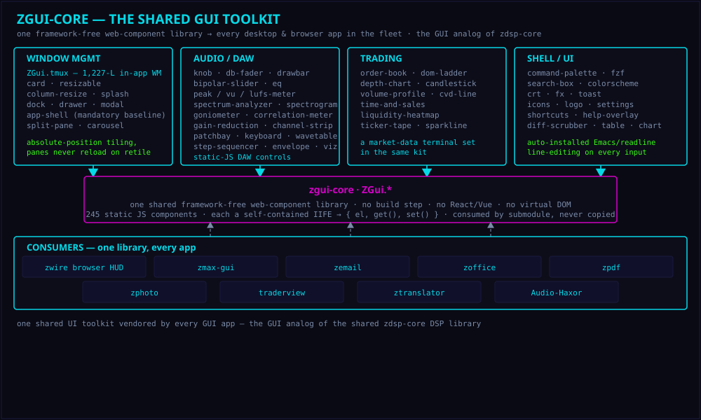
153
In-component fzf engine with live-tunable scoring weights
HIGH
Ships the actual fzf subsequence-scoring algorithm (match/gap/boundary/camel/consecutive bonuses) as a reusable matcher + <mark> highlighter, with the eight weights exposed as live-tunable sliders. Basis: zgui-core/webui/fzf.js (582 L), fzf-settings.js, fzf.test.cjs. Caveat: single-threaded JS port (not the Go optimal-alignment path); for in-memory lists.
154
Drag-to-wire bezier patchbay / modular-synth kernel
HIGH
A generic patching widget where any two [data-key] jacks are wired by a pointer drag, rendered as SVG bezier patch-cables with glow + click-to-disconnect, plus jack/module factories — a reusable kernel for modular synths, node editors, and signal-flow UIs. Basis: zgui-core/webui/patchbay.js. Caveat: layout/zoom/bus-routing left to the host.
155
Image-rendered playable 88-key piano with LED light-guide
HIGH
An on-screen playable piano whose keys are polygon clip-path hit-zones positioned from keyboard_geom.json over a perspective-rendered keyboard.png, with mouse-drag glissando, global pointer-up release, and a per-key LED light-guide (guide()/light()/colorize('rainbow'|'octave')) over MIDI 21–108, plus a companion piano-roll.js note editor. Basis: zgui-core/webui/keyboard.js. Caveat: renders/controls only — produces no sound.
156
One framework-free library co-shipping a full DAW surface and a trading-terminal set
HIGH
The same window.ZGui.* factory family ships a complete DAW control surface (spectrogram, spectrum analyzer, EQ/filter curves, waveform player, step sequencer, channel strip, knob/fader/drawbar, wavetable, env/LFO, LUFS/peak/VU meters) and a market-data terminal set (order book, depth chart, candlestick, volume profile, time-and-sales, liquidity heatmap, CVD line) — as plain static JS with no build step, no React/Vue, no virtual DOM (each of ~220 components is a self-contained IIFE returning a {el, get(), set()} handle). Basis: zgui-core/webui/*.js; CONSUMERS.md. Caveat: each is a widget, not a DSP/exchange engine; novelty is the breadth of specialized domains in one framework-free kit.
157
Auto-installed Emacs/readline line editing on every text input
HIGH
Loading the library globally installs a single capture-phase key handler giving every <input>/<textarea> full Emacs/readline editing — ^A/^E/^B/^F, M-b/M-f, ^W/^K/^U/M-d kills feeding a shared kill-ring, ^Y yank, ^T transpose — with no per-field wiring. Basis: zgui-core/webui/util.js (lineEdit/installReadline/killRing, auto-invoked at load). Caveat: single kill-ring slot; relies on the host loading util.js everywhere (the stack does).
ztranslator — extensions beyond the BOME baseline
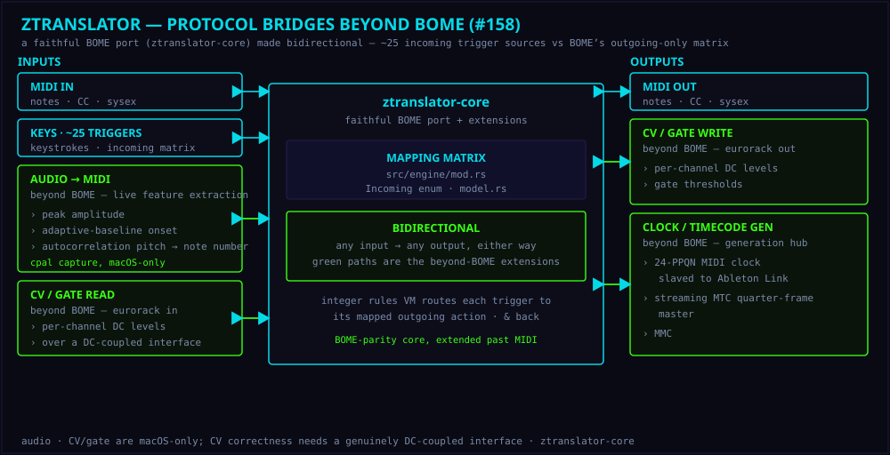
158
Bidirectional protocol-bridge extensions beyond BOME (audio→MIDI, CV/gate over DC-coupled audio, clock/timecode generation)
MED
Beyond faithfully porting BOME (#94/#95), the engine extends it past MIDI in directions BOME has no equivalent for: ~25 incoming trigger sources (the captured matrix item was outgoing-only), live audio-feature extraction to MIDI (peak amplitude, adaptive-baseline onset, autocorrelation pitch → note number), a eurorack CV/gate bridge over a DC-coupled audio interface (read/write per-channel DC levels + gate thresholds), and a clock/timecode generation hub (24-PPQN MIDI clock slaved to Ableton Link, streaming MTC quarter-frame master, MMC). Basis: ztranslator-core/src/model.rs Incoming enum + src/engine/mod.rs. Caveat: audio/CV/gate are macOS-only; CV correctness depends on a genuinely DC-coupled interface.
Shared libraries & infrastructure
159
Offline-first Ed25519 licensing with woven anti-tamper seeds and a $0 signed-manifest kill-switch
HIGH
A self-hostable licensing core verifies Ed25519-signed typed tokens fully offline and node-locks to hashed hardware IDs, with two anti-crack primitives: a binding_seed/guarded_seed whose value only a valid signature reproduces (so NOP-ing the license gate isn't enough — a cracker must forge Ed25519), plus a global kill-switch delivered as a signed manifest/CRL pulled from any untrusted free static host (signature verified before trust, issued-based anti-replay). Basis: zpwr-license/crates/ license-core/src/{lib,antitamper,online}.rs; rlib+staticlib+cdylib. Caveat: README is honest that client checks are patchable; tamper_tripwire carries brick risk; standard ed25519-dalek — novelty is the scheme.
160
Lock-free stream-from-disk → in-RAM reader hot-swap (glitch-free, virtual-EOF loop-off)
MED
LockFreeStreamSource starts playback from a disk-backed reader for instant audio, then atomically swaps in a RAM-backed reader mid-playback without the audio thread observing the switch (ring buffer on a background TimeSliceThread, SpinLock + generation counters instead of a CoreAudio-blocking CriticalSection), and models a synthetic EOF so toggling loop off plays the current iteration to its natural boundary. Basis: zdsp-core/include/zdsp/lock_free_stream_source.h (363 L). Caveat: RT-safety rests on review of the atomics, not a test; ported from the Audio-Haxor engine.
161
Single-source PTY terminal core driving both Tauri (rlib) and JUCE (C-ABI) webviews
LOW
A framework-agnostic portable-pty TerminalSession exposed simultaneously as a Rust rlib and a hand-written C ABI (zet_*), paired with one xterm.js frontend that auto-detects its transport (Tauri invoke/listen vs JUCE native functions), so the identical embedded terminal backs multiple apps across two GUI stacks from one source. Basis: zpwr-embed-terminal/src/{lib,ffi}.rs, webui/terminal.js. Caveat: constituent pieces are conventional; the modest novelty is the dual-host single-source packaging.
Cross-stack meta-patterns
162
Embeddable-engine pattern replicated across ~12 desktop domains by a solo author
MED
A dozen otherwise-unrelated desktop products are each built as the same engine shape: one Engine::invoke(cmd, json) → json command surface, compiled as rlib and staticlib and cdylib, fronted by a hand-written C ABI and a header-only C++ RAII wrapper and a mountable framework-free webview, and a Tauri v2 plugin — so identical behavior embeds in a Rust app, a C/C++ host (e.g. a JUCE DAW), and a webview. Basis: the identical pattern in zftp-core, zreq-core, zemail-core, zcite-core, zcontainer-core, zphoto-core, zpdf-core, ztranslator-core, ztunnel-core, zgo-core, zoffice-core, zdsp-core. Caveat: the individual apps are largely ports; the systemic, uniform reuse of one embeddable-engine contract across this many domains is the claimed novelty, not the apps.
163
"Durable-dependency" discipline — reimplementing crypto/zip/protobuf/OCR/NAT from scratch to avoid C/network/runtime deps
MED
A consistent, stack-wide stance of reimplementing normally-vendored primitives from scratch — pinned to published spec vectors — to keep cores pure-Rust, build-dependency-light, and offline: hand-rolled MD5/SHA/HMAC vs RFC/FIPS vectors (zreq-core/src/crypto.rs), gRPC .proto compiled at runtime via protox with no protoc (zreq-core/src/grpc.rs), a stored-ZIP writer with its own CRC-32 + font8x8 template OCR (zpdf-core/src/{convert,ocr}.rs), STUN/TURN NAT traversal with no third-party crate (strykelang), and byte-parity ports that run the upstream interpreter as an oracle (powerliners). Basis: the cited modules across the stack. Caveat: a recurring engineering philosophy, not a single artifact; the reimplementations are subsets, not always audited.